| リアルタイムウェブ 「なう」の時代 (マイナビ新書) | |
| 小林 啓倫 | |
| 毎日コミュニケーションズ (2010) | |
リアルタイムウェブー「なう」の時代
小林啓倫
◆本文中には、ＴＭ、（Ｃ）、（Ｒ）などのマークは明記しておりません。
◆本書に掲載されている会社名、製品名は、各社の登録商標または商標です。
◆本書によって生じたいかなる問題につきましても、著者ならびに（株）マイナビは責任を負いかねますので、あらかじめご了承ください。
◆本書の内容は、２０１０年11月現在のものです。
◆文中敬称略。
漫画、小説、一般書籍 RAW ZIP RAR 無料ダウンロード http://13DL.NET
プロローグ
「ラーメンなう」
こんな風に「なう」という語尾で終わる文章を、どこかで目にしたことはないだろうか。これはインターネットから生まれた表現で、最近は雑誌やテレビなどで使われることも増えている。
ネット上のスラングには変わったものが多いが、「ラーメンなう」も意味を知らない人の目には、かなり奇妙に映ることだろう。ラーメンは食べ物のラーメンで間違いなさそうだが、「なう」はいったい何物なのだろうか？
実はこの表現、英語で「今」を意味する「ｎｏｗ」を平仮名にしたもので、文字通り「今〜している、〜にいる」ということを表している。したがって「ラーメンなう」とは、「今からラーメンを食べようとしている」あるいは「今まさに食べている」といった程度の意味だ。
発信源については諸説あるが、ミニブログサービス「ツイッター（Twitter）」の日本人ユーザーたちが使い始めてから定着したと考えられている。
「定着したと言われても、『なう』なんておかしな表現を使う人がそんなにいるのか」
と、疑われる方もいるかもしれない。
しかし「なう」は２０１０年のユーキャン新語・流行語大賞トップテンにも選ばれ、ネットの世界ではもはや古くさい存在になりつつある。むしろ「なぜ今さら『なう』に注目する必要があるのか？」とネットの流行に強い一部の方は感じるかもしれない。
試しにこの文章を書いている時点（２０１０年11月１日）で「ラーメンなう」をキーワードに検索してみたところ、直近30分の間に10人の人々がまったく同じ発言をしていた。しかも検索を実行したのは深夜１時30分。夜食にしても遅い時間だ。
それにもかかわらず、これだけの数が検索にヒットしたということは、昼食や夕食の時間帯であればどれほど多くの人々が「ラーメンなう」とつぶやいているか想像できるだろう。
さらに「なう」だけで検索してみると、わずか20秒間で10人の人が「なう」という表現を使っていることが確認できた。その使い方も、見ているテレビ番組を伝えるもの、これから寝ることを伝えるもの、逆に目が覚めてしまったことを伝えるものなどさまざまだ。
その一方で、「本当に流行しているのか」と疑いたくなる方の気持ちも理解できる。「今していること」を表すだけの表現を使って、何か面白いことがあるのだろうか？
実際の話、「ラーメンなう」に代表されるように、「なう」を使う文章には些末なものが多い。「トイレなう」や「寝坊なう」のように、ブログ時代ですら考えられなかったような書き込みまで行われている。
それゆえに、ツイッター、ひいては最近のネットユーザーのバカバカしさを表すものとして、「なう」は「識者」と呼ばれる人々の一部から、揶揄の対象となってしまっている。
だが、ここで宣言してしまおう。実は「なう」こそが、ウェブ２・０とクラウドコンピューティング、そしてソーシャルメディアに続く、ウェブの新しい進化を象徴するキーワードなのだ。そしてこの言葉の前では、今絶対的な勢力を誇るグーグル（Google）でさえも、挑戦者として振る舞うことを余儀なくされているのである。
なぜこの奇妙な表現が、それほど重要なキーワードだと言えるのか。それを解く鍵は、本書のテーマである「リアルタイムウェブ（Real-time Web）」にある。
リアルタイムウェブとは、簡単に言ってしまえば「情報がリアルタイムに伝わるウェブ」ということだ。しかし残念ながら、その重要性が正しく理解されているとは言えない。
例えば「なう」という言葉を生み出し、リアルタイムウェブを象徴するサービスの一つとも言えるツイッターには、大手企業による買収のうわさが絶えない。ネット界の巨人であるグーグルもその中の一社で、２０１０年のはじめには約25億ドル（２１００億円）というオファーをツイッター側に提示していたと報じられている。
しかし現在、ベンチャーキャピタルによるツイッターの評価額は30億ドル〜40億ドルにまで達していると言われており、同社は外部からの買収提案を歯牙にもかけていないような状況だ。
またリアルタイムウェブを活用し、「フラッシュマーケティング」（第６章で解説）という新たな販促手法を確立したグルーポンというウェブサービスに対しても、グーグルが約60億ドル（５０００億円）という額を提示しているとの報道がある。いずれも（まだ）合意には至っていない話だが、いかにリアルタイムウェブの存在感が増しているかを示していると言えるだろう。
このように最近のウェブ世界では、グーグル中心だった状況に大きな変化が生まれようとしているのだが、リアルタイム化という側面からそれを捉えようとする動きはまだまだ少ないのが現状である。
しかしこの言葉は、今後のウェブ、そして社会全体の変化を示すキーワードの一つとなるだろう。リアルタイムウェブとは単に、ウェブ上の情報スピードが多少速くなったという程度の話ではない。そのような量的変化だけでなく、ウェブ空間の質的変化も同時に起きつつあるのだ。
そして後述するように、日本の社会は世界に先駆けて「リアルタイム化」を進めてきた経緯があり、リアルタイムウェブにおいてもアドバンテージを有していると考えられる。だがいま起きている変化を正しく理解できなければ、現在のアドバンテージを有効活用することは難しいだろう。その意味でも、リアルタイムウェブとは何かを改めて考えてみる必要があるに違いない。
本書は「リアルタイムウェブ」について解説を行うと共に、その革新性と「なう」というスラングが示す時代の変化について考察してみたい。
リアルタイムウェブ―「なう」の時代 目次
プロローグ
第１章 「グーグルの10年」の終わり
「次の10年」を制するのは誰か
ウェブ２・０の登場
具現化するクラウドコンピューティング
ソーシャルメディアの台頭
リアルタイムウェブを体験する
リアルタイムウェブを構成する三つの要素
第２章 リアルタイムを実現するウェブ技術
プル ＶＳ プッシュ
プッシュ型による情報配信
プッシュ型配信の先駆けとなったＲＳＳ
プッシュ型配信技術の進化
クラウドコンピューティングの貢献
第３章 モバイル技術の重要性
リアルタイム「ウェブ」に足りないもの
先進的な日本のモバイル環境
「リアルタイムウェブ」を先取りしていた若者た2
スマートフォンの貢献
位置情報サービスの流行
「ＰＣ＋ブラウザ」から「モバイル＋アプリ」へ
ウェブに死が訪れる？
「モノのインターネット」との接続
第４章 社会環境の変化
社会と技術の関係
スピードを求める人々
プライバシー意識の変化
プライバシーよりスピード感が大事？
アンビエント・アウェアネス
押し寄せる情報洪水
マルチタスク脳の功罪
第５章 リアルタイムウェブ時代のグーグル
ウェブと検索の補完関係
検索エンジンのタイムラグ
リアルタイム検索の登場
世界第２位の検索サービス？
「検索」概念の変化
キーワード＋アルファによるリアルタイム検索
ソーシャルフィルタリングの登場
ツイッターにおけるソーシャルフィルタリング
ストック ＶＳ フロー
「フロー化」の必然性
なぜＲＳＳリーダーは普及しなかったのか？
リアルタイム時代に求められる「グーグル」とは
第６章 リアルタイムウェブと社会の未来
２００１年のグーグル検索
重なり合うウェブと現実
リアルタイムウェブから社会を分析する
マーケティングへの活用
従来のウェブとの融合
リアルタイムウェブで消費者を動かす
リアルタイムウェブで社会を変える
意識のズレが生むリスク
「日本発リアルタイム文化」の可能性
エピローグ
第１章 「グーグルの10年」の終わり
「次の10年」を制するのは誰か
21世紀最初の10年が終わり、次の10年が始まろうとしている。
１９９１年から２０００年までを、マイクロソフトがＰＣの世界で覇権を確立した10年と捉えるなら、２００１年から２０１０年までは、グーグルがインターネットの世界で覇権を確立した10年と捉えることができるだろう。
グーグルは検索エンジンという、いまや日常生活においても欠かせない存在となったサービスで大きなシェアを握り、それをテコにしてさまざまな領域に進出。かつてのマイクロソフトに代わり、ＩＴ業界で最大の存在感を発揮する企業となった。後述するように、最近のネット上では新たなＩＴベンチャーが勢いを増しつつあるが、まだまだネット企業と言えばグーグルを連想する人が多いだろう。
そのためか、マスメディアではいまだに「ネットの未来を左右するのはグーグルだ」というような主張を目にすることが多い。もちろん誇大表現としてこうした言い方をしている場合もあるが、果たしてグーグルは次の10年もその力を維持することができるのだろうか？
これまでのグーグルの姿を見ていると、この問いに対して「ＹＥＳ」と答えたくなってしまうかもしれない。しかし実際には、グーグルにとってホームグラウンドであるはずのウェブの世界において、彼らですら完全には追い切れないような変化が生まれ始めている。
また「マイクロソフトの10年」の終盤に当たる１９９８年にグーグルが創業したように、既に「グーグルの10年」の土台を揺るがす企業が、数多く登場しているのだ。
本章では、近年におけるウェブの変化を振り返りつつ、最も新しい変化である「リアルタイムウェブ」が登場するまでの流れを俯瞰してみたい。
ウェブ２・０の登場
まずは２００５年の終わりごろから注目を集めるようになった「ウェブ２・０」である。日本でもネットや新聞、雑誌、テレビで大きく取り上げられ、解説書も数多く出版されているので、ご存じの方も多いだろう。しかし明確な定義が確立されているわけではなく、その当時生まれたさまざまな新技術・新サービスの総称として使われていたという面も大きいため、ウェブ２・０が何を意味しているのかは未だにあいまいなままだ。
ウェブ２・０の別名の一つに「リード・ライト・ウェブ（Read Write Web）」という表現があるのだが、本書ではこの表現をウェブ２・０の定義として考えてみたい。つまりウェブ２・０という現象は、ウェブが「読み・書き」の両方ができる双方向メディアへと変貌したという捉え方だ。
メディアには一方向のものと、双方向のものの２種類が存在する。新聞やテレビといったメディアは前者の代表、手紙や電話といったメディアは後者の代表だ。
もちろん輪転印刷機やテレビ局を個人で所有して、それで好きなメッセージを発信することも不可能ではない。その意味ではあらゆるメディアが双方向だと言えなくもないが、現実には情報の発信者が限定されてしまうメディアと、誰もが受信者と発信者の両方になれるメディアの２つに分けることができる。
ウェブ２・０が話題になる前、ウェブはどちらかと言うと一方向のメディアという色彩が濃かった。何かを発言しようという人は、ウェブサイトを記述する言語であるＨＴＭＬを覚え、コーディングを行い、さらにウェブサイトを開設するサーバを自前で用意するか、業者と契約し、作り上げたＨＴＭＬファイルをサーバ上に転送しなければならなかったわけである。
「ホームページビルダー」といったツールや、ホームページ設置用のサービスを提供してくれる企業などの登場によって、必要なステップのいくつかは簡易化されたが、それでも「ウェブ上でメッセージを発信する」というのは限られた人々にしかできない行為だった。
これを変えたのが、ウェブ２・０の下で起きた一連の変化である。ＨＴＭＬを知らなくても、あるいは自前でサーバを用意しなくても、簡単な操作でさまざまなコンテンツをウェブ上で公開することを可能にするサービスが登場した。
手紙や電話と同じぐらいにまで特別なスキルを必要としないものになったわけではないが、ウェブ２・０により、ウェブは双方向の情報発信が可能なメディアへと変貌したのである。
実際に多くのユーザー、かつてコンテンツを消費するだけだった人々がコンテンツ制作者の側に回り、ウェブ上には大量の情報が流れ込むこととなった。
グーグルはウェブ２・０の流れに対して、自らさまざまな関連サービスを提供し、さらに他社のウェブ２・０系サービスを支えるプラットフォームを提供するという対応を行うことで、その存在感を高めることに成功した。
例えば地図サービスの「グーグルマップ（Google Maps）」は、簡単な操作でユーザー自身が持つデータを地図上に配置することが可能であり、ウェブ２・０を構成する概念の一つ「マッシュアップ」（複数のウェブサービスやデータをＡＰＩ（※１）でつなぎ、新たなサービスを完成させること）に最も用いられたサービスの一つとなっている。
簡単な比較はできないが、例えて言うなら、マイクロソフトがウィンドウズ95において、インターネットという新しい波をサポートする姿勢を示して成功を収めたことになぞらえられるだろう。
変化への対応に成功したことにより、グーグルはウェブ２・０を代表する企業という評価をされることも多い。ただよく見てみると、ブログサービスである「ブロガー（Blogger）」や動画共有サービスの「ユーチューブ（YouTube）」など、グーグルが自社内で開発したのではなく、他社や他社のサービスを買収することで自社サービスとした例も少なくない。
もちろん買収によって新しい状況に対応するという戦略は何ら間違っているものではないが、グーグルといえども、新たにうまれてきたニーズのすべてに、自社だけで応えられているわけではないのだ。
またウェブ２・０によって、「検索エンジンを使って情報を探す」というスタイルにも変化が生じ始めた。例えば「ディグ（Digg）」というサイトでは、ユーザーが面白いと思ったウェブページ（ニュースや解説記事など）を登録することができるのだが、同時に他のユーザーが登録したページに支持・不支持を表明することができる。
そして「支持票」を集めているページを一覧表示させることが可能で、今ディグのユーザーたちが面白いと感じているニュースが一目で分かるという仕組みだ。
同様にブックマーク共有サービスの「デリシャス（Delicious）」も、単にウェブ上にブックマークを登録することが可能なサービスというだけでなく、集められたブックマークを集計して登録数の多いサイトを参照することができる。
これらのサービスのように、ウェブ２・０の登場以後、検索エンジンに代わる「有益な情報を探し出す方法」が模索され始めた。具体的には、多くの人々が情報発信に参加できるようになったことを利用し、彼らにちょっとした作業を手伝ってもらうことによって（先ほどのディグの投票機能のように）情報を探し出しやすくする仕組みが数多く登場することとなったのである。
具現化するクラウドコンピューティング
グーグル上で特定のキーワードがどれほど検索されているのかが分かる「グーグルトレンド（Google Trends）」というサービスがあるのだが、これを使って調べてみると、「ウェブ２・０」という言葉の検索回数は２００７年で頭打ちになり、２００８年以降は下降線を辿っていることが分かる。
実際に「ウェブ２・０」はこのころからメディアに登場する回数も少なくなり、今では時代遅れの響きが伴うものとなってしまった。
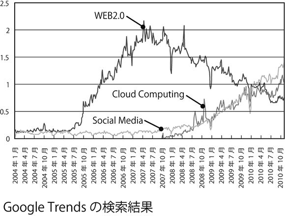
しかし、だからと言ってウェブ２・０の概念がすべて否定されてしまったわけではない。むしろあいまいとしていた要素のいくつかが具体的なものとなり、さらに実現されるに至って、新たな概念として進化を遂げたと言えるだろう。ちょうど鳥類に進化した恐竜たちが、あたかも地上から消え去ってしまったかのように見えるようなものだ。
ではウェブ２・０は何に進化したのだろうか。いくつか候補が存在するが、本書では直接の後継者として、「クラウドコンピューティング」と「ソーシャルメディア」を挙げておきたい。
改めてグーグルトレンドで確認してみると（前ページ図参照）、クラウドコンピューティングとソーシャルメディアは、どちらもウェブ２・０と入れ替わるように２００８年から検索回数が上昇しているのが分かる。
２０１０年に入ると、両者に対する検索の方が上回るようになっており、さらにその差は開きつつある。２つの概念のうち、まずはクラウドコンピューティングの方から振り返っておこう。
クラウドコンピューティングも非常に広い概念だが、簡単に言えば従来はローカルＰＣ上で行っていたさまざまな処理を、インターネットを通じて別のコンピューティングリソース（さまざまなサーバ類など）に負担させるというものだ。
２００６年８月、米サンノゼで行われたイベント上で、グーグルのＣＥＯエリック・シュミットが「クラウドコンピューティング」という表現を使ったのが最初とされている。同様の概念は古くから存在していたのだが、通信環境の整備が進んだこと、そしてウェブ２・０によって「ウェブ上でデータ処理を行う」という発想が一般的になったことで、２０００年代後半に急速に普及する状況が生まれた。
ウェブ２・０系サービスは、本来はローカルＰＣ上で行われるはずだった「コンテンツ（データ）の保管」および「コンテンツ（データ）の表示」という処理をウェブ側で行うという点で、程度の差はあれ、いずれもクラウドコンピューティング的な要素を含んでいると言えるだろう。
また単に保管・表示を行うだけでなく、より高度な処理を提供しているサービスも多い。例えば画像共有サービスの「フリッカー（Flickr）」は、２００７年12月から画像編集機能を追加している。これを利用すると、ローカルＰＣ上に関連ソフトが一切インストールされていなかったとしても、ウェブブラウザさえあればいつでもフリッカー上にアップロードされた画像を加工することが可能だ。
こうした機能が整備されるようになったことで、ウェブはどこか別の場所で加工されたデータを保存しておくだけの場所ではなく、データ処理そのものが行われる場所となった。さらに、処理の一部をクラウド側に移すことで、端末の制約から解放されることとなり、データが必要になった時点でさまざまな端末から更新が行えるようになっている。
つまり、クラウドコンピューティングによって、リソースの共有を可能にし、ウェブ上に鮮度の高い情報が集約されるという結果をもたらしたと言えるだろう。
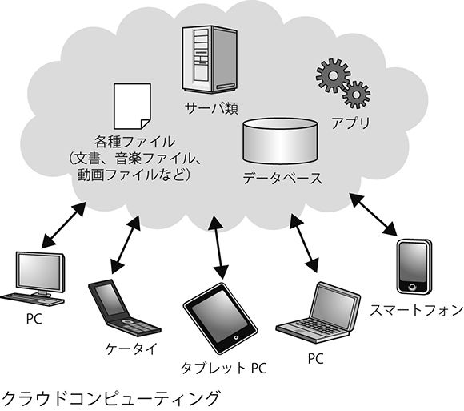
グーグルはクラウドコンピューティングの流れに対しても積極的に取り組む姿勢を見せており、「グーグルアップス（Google Apps）」や「グーグルアップエンジン（Google App Engine）」など、さまざまな関連サービスを発表している。
またウェブブラウザの「クローム（Chrome）」や、携帯電話用ＯＳの「アンドロイド（Android）」など、端末環境の側を進化させる取り組みも忘れていない。ウェブサービスから端末まで、クラウド全体を視野に入れた商材／サービス展開を行っているという点では、ｉＰｈｏｎｅ／ｉＯＳとｉＴｕｎｅｓを擁するアップル社と双璧をなす存在だと言えるだろう。
ただしこの分野では、他にもマイクロソフトが巻き返しの動きを見せるなど、強力なライバルがひしめいている。グーグルといえども、その中の一プレーヤーにすぎないのが実情だ。
ソーシャルメディアの台頭
クラウドコンピューティングと歩調を合わせるように、２００８年ごろから急速に台頭してきたのが「ソーシャルメディア」である。
残念ながら、ソーシャルメディアという概念が何を意味するかという点についても、他の言葉同様にあいまいとしている。少し長いが、ここでは「ユーザー自身が情報発信することができ、かつユーザー同士のつながりを持つことが可能で、そうしたつながりが重要な役割を果たすメディア」と定義しておきたい。
ウェブ２・０の普及によって、誰もがウェブ上で情報発信できるようになった結果、発信された情報を介して人々が交流するという現象が必然的に生まれてきた。さらにウェブサービスの側でも、そういったユーザー同士のコミュニケーションを利用拡大のチャンスと捉え、積極的にサポートするところが増えてきている。
これがソーシャルメディアなのだが、「ユーザーが情報発信の主体となる」という点ではウェブ２・０と変わりないことから、ほぼ同じ意味の言葉として使われることも多い。実際、ウェブ２・０の代表的なサービスが、そのままソーシャルメディアの代表的なサービスとして紹介されるということもよく目にする。
また最近では、ユーザー間での交流ができないウェブサービスを探す方が難しくなってきている。自らＳＮＳ（ソーシャルネットワーキングサービス）的な機能を追加する、あるいは外部のＳＮＳ型サービスと連携し、自社サイト内でユーザーが取った行動を外部に発信可能にするなど方法はさまざまだが、古くからあるサイトまでがこぞって「ソーシャル化」を進めている状況だ。
さらに現在、睡眠や飲食、喫煙、読書など、あらゆる人間活動をサポートするウェブサービスが登場してきており、「すべての活動がソーシャル化される」と予測する人も少なくない。
このようにウェブ２・０と非常に近く、同一視されることの多いソーシャルメディアだが、その違いを意識しておくことは重要だ。事実、先ほど取り上げたウェブサービス「ディグ」は、ウェブ２・０の代表的なサービスとして成功を収めながら、ソーシャル化の波に乗ることができずに失速、最近では社員のリストラにまで踏み切るという結末を迎えている（現在大幅なソーシャル化を施して再出発を図っているが、出遅れを取り戻せるかどうか定かではない）。
それではソーシャルメディアの独自性とは何なのだろうか。
それは、先ほどの定義でも触れた「人と人とのつながりが重要な役割を果たす」という点だ。
極端な話をすれば、ウェブ２・０とは世界中の人々が自分専用の印刷所を持つようになったような状態にすぎない。他人が発信した情報にアクセスするために、従来通り検索エンジンを経由するか、はたまた人気投票など新たな手段を編み出すかは、派生的に生まれてきたテーマだった。
これに対しソーシャルメディアでは、自分と他のユーザーとの関係を明確に打ち立てることが本質的なテーマであり、さらにその関係性が情報流通に役立てられることになる（例えばツイッター上では、フォローしているユーザーの発言のみが画面に表示されるなど）。
つまりユーザーに情報発信の仕組みを与えるだけでなく、情報流通の仕組みまでも「ソーシャル（人と人との関係）」という観点から構築しようとするのがソーシャルメディアというわけだ。その証拠に多くのソーシャルメディアでは、ソーシャル性、つまり他のユーザーとの関係（友だち登録をするなど）を作り上げないと本当の面白さが分からないというサービスが多い。
したがってソーシャルメディア上では、人々が情報を入手する行為が必然的に変化することになる。従来のウェブのように「検索エンジンにキーワードを入れて探す」という行為とはまったく異なるアプローチが登場するのだ。グーグルにとってはあまり愉快な話ではないだろう。
またＳＮＳなど、そもそもウェブ上でクローズドな環境（パスワードによって保護され、許可された人々しか閲覧できない空間）を確立し、その中でのコミュニケーションができることを売りにしているソーシャルメディアも少なくない。こうした環境の中にある情報は、当然ながら検索エンジンで探し出すことは不可能である。
さらに人々の関係が情報の流通に役立てられるという仕組みにおいては、一度関係が構築されてしまうと、他のサービスに乗り換えるのは非常に難しい。
こうした性質があるため、さすがのグーグルといえども、ソーシャルメディアの分野においては苦戦が続いている。
例えばＳＮＳの分野では、「フェイスブック（Facebook）」と「マイスペース（MySpace）」というサービスが二大巨頭として君臨している。特に最近ではフェイスブックが勢いを増しており、２０１０年７月の時点でユーザー数が５億人を突破するなど、マイスペースを押さえて覇権を握りつつある状況だ。２０１０年11月にはマイスペースがフェイスブックとの連携機能を強化することを発表するなど、今後はフェイスブックの一強時代が到来することが予測されている。
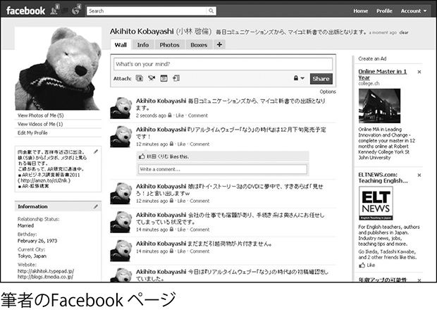
一方のグーグルは「オーカット（orkut）」というＳＮＳを運営している。オーカットのユーザー数は１億人に達しており、決して少なくはないが、５億人と比べれば見劣りしてしまうのが実情だろう。さらにユーザーの所在地を見てみると、ブラジルおよびインドのユーザーが大半を占めているなどの偏りがあり、短期間のうちにフェイスブックから覇権を奪うという可能性は小さい。
さらにフェイスブックは、グーグルではなくマイクロソフトとの関係を強化しており、２０１０年10月にはフェイスブック内の一部の情報をビング（Bing／マイクロソフトの検索サービス）に提供することを決定した。
グーグルの検索エンジンは、いまだにフェイスブック内に閉じられている情報にアクセスできない状態であり、グーグルの立ち入れない広大な領域が、ウェブ空間に広がり続けるという状況を許してしまっている。
またミニブログについては、ツイッターが揺るぎない地位を確立しているが、グーグルは２００７年10月に「ジャイク（Jaiku）」というフィンランドのベンチャー企業を買収し、ツイッターに対抗する姿勢を見せていた。
しかしグーグルの力を持ってしても、ツイッター上で既に確立された「ユーザー間のつながり」という価値を覆すわけにはいかなかった。ウェブ２・０の時代にはうまくいった買収戦略だったが、２００９年１月には、ジャイクの開発打ち切りが発表されている。
さらにグーグルは２０１０年２月に「グーグルバズ（Google Buzz）」という新しいミニブログ系サービスを発表し、再びツイッターに挑戦しているが、いまだに勝算は見えていない。
ただしツイッターについては、グーグルは２００９年10月に業務提携を行っており、後述するようなツイッターを対象としたリアルタイム検索を実現している。
リアルタイムウェブを体験する
このように２０００年代中ごろからウェブ２・０、クラウドコンピューティング、ソーシャルメディアという変化が起きてきたわけだが、これら３つの変化をベースとして登場したのが、本書のテーマとなる「リアルタイムウェブ」である。
リアルタイム（real-time）という単語は日本語でもそのまま使われているように、「即時に」または「同時に」といった意味だ。したがってリアルタイムウェブとは、文字通り、「情報が即時にやり取りされるウェブ（サービス）」を意味する。
ただしリアルタイムウェブも、その前に起きた「先輩」格の変化と同様、現時点では明確な定義は与えられていない。
そこでまずは、具体的なサービスをいくつか見てみよう。
パソコンを立ち上げ、お馴染みグーグルの検索サービス（google.co.jp）にアクセスして欲しい。そこで何か一般的な言葉を使い、検索を実行してみよう。キーワードは何でもよいのだが、放送中のテレビ番組など「今注目されている」ことが明らかな言葉だと分かりやすい。
例えばここでは、「山手線」という言葉で検索してみることにする。
通常の場合、「山手線」で検索すると結果に出てくるのはウィキペディアやＪＲ東日本の公式ホームページ、あるいは個人の情報サイトなどといったウェブサイトたちである。他のキーワードでも似たようなサイトが選ばれるはずだ。
それでは画面をそのままにして、左側にあるツールバーに注目していただきたい。その中に「リアルタイム」というメニューがあるのが分かるだろうか（以前は「アップデート」という名前が付けられていた）。見つからないという方は、「もっと見る」というボタンを押せばすべてのメニューが表示されるので、その上で確認してみていただきたい。この「リアルタイム」というメニューをクリックしてみよう。
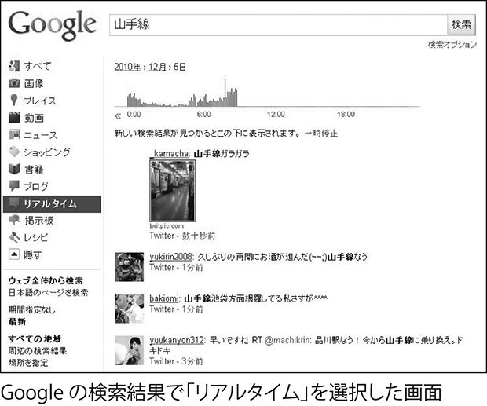
どのような変化が起きただろうか？ 新しく表示された画面には小さなアイコンと、短いメッセージがずらりと並んでいるはずだ。さらに各々のメッセージの下には、「〜分前」といった具合に投稿された時間も表示されている。場合によっては、たった数秒前に書き込まれたばかりというメッセージもあるだろう。
さらにしばらく眺めていると、画面が自動的にアップデートされ、新しいメッセージが上に積み重ねられてゆく（古いメッセージはどんどん下へと追いやられる）様子が見られるはずだ。
このように、たった今生まれたばかりの情報を、文字通り「リアルタイム」で入手できるというのがリアルタイムウェブである。ただし広大なインターネットの世界をくまなく監視して、どこかの片隅で生まれた情報をもれなく拾い上げるというのは現状では不可能だ。
では「リアルタイム」検索はどのように対処しているのか。実は簡単な話で、ツイッターやフレンドフィードなど、一部のリアルタイムウェブ系サービスに検索対象を限定しているのである。
さらに従来のグーグル検索では、キーワードに対する関連性の高い順番に結果が並べられていたが、同じように関連度を調べていてはどうしてもタイムラグが発生してしまう。
そこでこの「リアルタイム」検索機能では、あくまでも機械的に、新しいメッセージを上から表示するという形式を取っている。このようにリアルタイムウェブでは、情報の即時性を維持するために、いくつか従来のウェブとは異なる仕組みを採用しているわけだ。
次に、もう一つの代表的なリアルタイム系サービスである「ユーストリーム（Ustream）」を見てみよう。
一言で例えるならば、ユーストリームは生中継専用のユーチューブだ。ユーチューブのように録画された動画ファイルの共有にも使えるのだが、「誰でも手軽にウェブ上での生中継ができる」という点がユーストリームの最大の価値である。
ウェブブラウザにustream.tvと入力してアクセスしてみて欲しい。アクセスすると、その時点で生中継が行われている「番組」のお勧めが表示されるはずだ。
どれでも好きなものを選んでクリックしてみると、映像のストリーミングが開始される。また画面の右側には「ソーシャルストリーム」と名付けられたコーナーがあり、ここではツイッターやフェイスブックといった他のリアルタイム系サービスを通じて、番組に関するコメントを投稿できるようになっている。

つまりユーストリームは映像というコンテンツをリアルタイムで共有できるだけでなく、それに関する感想も（外部サービスの力を借りて「マッシュアップ」する形式ではあるが）リアルタイムで共有できるサービスなのである。
ユーストリームは２００７年３月のサービス開始以来、世界各国で数多くのユーザーを獲得しており、日本でも２０１０年２月にソフトバンクが約18億円を出資して話題を集めた。
また民主党政権の評価を一躍上昇させた「事業仕分け」の生中継が行われるなど、個人的な楽しみやイベントのためだけでなく、政治的イベントや重大事件の中継にも活用されている。
最近ではチリで起きた鉱山落盤事故の際、地下に残された33人の作業員を救出する場面がユーストリームで中継され、10月11日から13日までの間に５３０万回のストリーミングが配信された。世界的に注目された出来事とはいえ、いまやウェブ経由でもこれだけの規模でリアルタイムの映像中継が行われているわけである。
またユーストリームに限定した話ではないが、２０１０年11月には興味深い調査結果が報じられている。米国では音楽のストリーミング配信を利用する頻度が、音楽のダウンロード配信を利用する頻度と肩を並べたというのだ（※２）。
まだ音楽に限定した話であり、より詳細な調査を待つ必要があるが、ストリーミングというコンテンツ配信のあり方が定着してきていることを示す一つの証拠と言えるだろう。
リアルタイムウェブを構成する三つの要素
実際のサービスを見ることによって、リアルタイムウェブとはどのようなサービスで、どのような価値を提供してくれる存在なのか、ある程度イメージがつかめたのではないだろうか。
それではなぜ、２０００年代の終わりという現在のタイミングになって、リアルタイムウェブが登場してきたのだろうか？ そしてリアルタイムウェブの世界では、グーグルにとって最も重要な「情報への道筋」はどのように変化するのだろうか？
ここまではリアルタイムウェブについて、主にウェブの変化という側面から考えてきた。しかしリアルタイムウェブが登場した背景を理解し、その全体像を見渡すためには、「ウェブ技術」「モバイル技術」「社会環境」という３つの要素を視野に入れなければならない。
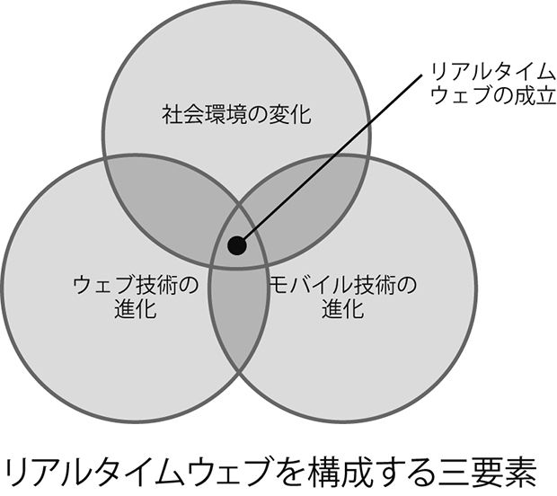
リアルタイムウェブとは、単にウェブだけの進化を表すのではなく、これら３つの要素が組み合わさることで可能になった現象なのである。
それでは具体的に、個々の要素にどのような変化が起きているのか。続く第２章から第４章にかけて、詳しく見てみることにしよう。
※１ ＡＰＩ：Application Programming Interface。
プログラミングの手間を省くために設定された命令や関数の集合のこと。
※２ 'Americans Now Stream As Much Music As They Download,' Evolver.fm,
http://evolver.fm/2010/11/11/americans-now-stream-as-much-music-as-they-download/
第２章 リアルタイムを実現するウェブ技術
プル ＶＳ プッシュ
前章ではリアルタイムウェブを「情報が即時にやり取りされるウェブ（サービス）」であると解説した。この定義は間違いではないのだが、リアルタイムウェブの姿を正しく把握するためには、まだいくつかの特徴について説明する必要がある。
本章でウェブ技術の側面から、リアルタイムウェブについてもう少し詳しく見ていくことにしよう。
まず、リアルタイムウェブに欠かせない「プッシュ型」の情報配信についてである。
今何か気になる試合、例えばサッカーＷ杯で日本代表のリーグ戦突破がかかった試合や、野球の日本シリーズ第７戦などが行われているとする。
ところが残業で会社に残ることになってしまい、テレビ中継を見ることができないとしたら、あなたはどうするだろうか？（幸運にも）会社でネットの閲覧が許されていれば、当然ながらスポーツニュースなどのウェブサイトにアクセスするはずだ。
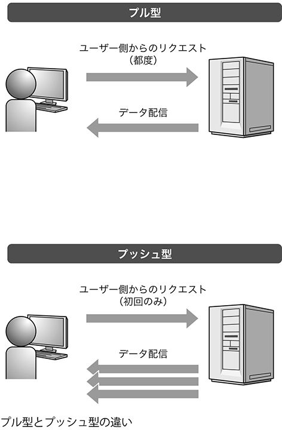
このとき、試合情報をユーザーが自ら取りに行った場合、言い換えればブラウザを立ち上げてスポーツニュースのページにアクセスし、該当の試合経過を確認するという行為を行った場合には、コンテンツが「プル型」で配信されたと表現される。
つまり、試合内容というコンテンツが保管場所（サーバ）からユーザー側（ＰＣ）へ「引っ張ってこられた」のでプル型というわけだ。従来、ウェブサイトから情報を得る際には、ほとんどの場面でプル型が行われていた。
それでは、更新がいつ行われるのか分からない状況ではどうだろうか。例えば午後の天気を知りたいという場合に、ＰＣの前に座って天気情報のページを開き、Ｆ５キーを連打する（画面をリロードし続ける）などといった行為をするのは非効率的だ。
ずっとＰＣの前にいては他の仕事ができないし、予報は午前中のままで変更されず、したがってウェブページの更新も行われないかもしれない。プル型の下でもリアルタイムに情報を得られないことはないが、それにはユーザー側の負担が求められるのである。
それなら情報が更新されたかどうか、ユーザーにチェックしてもらうのではなく、更新した側がユーザーに伝えに行けばよいのではないか---これが「プッシュ型」情報配信の考え方である。
プッシュ型であれば、ユーザーは情報が更新されたかどうかを知るために、いちいちウェブサイトにアクセスする必要はない。仮に情報をチェックすることを忘れていたとしても、更新が行われた瞬間に、ユーザーの手元に情報が届くことになる。つまりどんな場面でもリアルタイムウェブが実現されるわけだ。
プッシュ型による情報配信
プッシュ型による情報配信を、実際のリアルタイムウェブ系サービスで見てみよう。
ツイッターのタイムラインを公式ウェブサイト（twitter.com）で眺めていると、しばらくするうちに「新しいツイートが〜件あります」というメッセージが画面に表示されるのが分かるだろう。
これは文字通り、新着のツイートがあることを示すメッセージであり、放置し続けると「〜件」の数字が増えてゆく。ユーザーはリロードボタンを押すなど、何らかのアクションを起こす必要はない（メッセージをクリックすれば、新しく投稿されたツイートが画面に追加される）。
この仕組みにより、ユーザーは新しいツイートが存在していることをリアルタイムに把握することができるわけだ。同じ仕組みは特定のユーザーのツイートを表示する画面や、リスト画面など、ツイッター公式サイトのさまざまな場所に組み込まれている。
また日本は対象から外れているが、ツイッターは一部の国々において、携帯電話のＳＭＳ（ショートメッセージサービス）で新着ツイートを知らせるという機能を提供している。
これを使えばツイッターの画面を開いていなくてもツイートの更新を知ることができ、さらに携帯電話への通知のため、ＰＣの前に座っていなくてもメッセージを確認することができるわけだ（日本では２０１０年10月から、ＳＭＳではなく携帯電話メールによる通知機能が提供されている）。
２０１０年11月には、ツイッターのｉＰｈｏｎｅ用アプリにもう一つのプッシュ型機能が追加されている。自分あてのメッセージが投稿された場合、それを即座に通知してくれるというもので、この機能によってツイッターをリアルタイムなコミュニケーションツールとして活用することが今まで以上に容易になった。
さらに面白いインターフェースを実現しているのが「フレンドフィード（FriendFeed）」である。フレンドフィードはツイッターのようにメッセージを投稿するサービスなのだが、それに加えてツイッターや通常のブログ、フリッカー、ＳＮＳなど、他のさまざまなウェブサービスの更新内容を取り込むことができる。
つまりこれらのサービスを利用していて、それを一括して友人に伝えたい場合、逆に友人が更新しているウェブサービスを一括でチェックしたい場合に便利なサービスだ。
フレンドフィードにも、ツイッターのタイムラインに相当する画面がある。ここに自分や他人のメッセージ、あるいは更新したウェブサービスへのリンクなどが表示されるのだが、ちょうど冒頭のグーグルの例のように、コンテンツがリアルタイムで更新される。ツイッターのように新着が告知され、それをクリックすればツイートが追加されるという流れではなく、メッセージ自体が自動的に更新されるのだ。
したがって画面を見ていると、まるで滝のようにテキスト（写真や動画が含まれていればそのイメージも）が上から下へと流れて行く（気になるコンテンツが目に入れば、この「流れ」を一時停止することができる）。
このようにリアルタイムウェブでは、ユーザー側に「ＰＣの前に座りＦ５キーを連打する」といった負担を強いることなく、リアルタイム性が実現されるのである。
プッシュ型配信の先駆けとなったＲＳＳ
プッシュ型の情報配信を実現するため、これまでさまざまな技術開発が行われてきた。先ほどのツイッターやフレンドフィードのような仕組みが実現されるまでにどのような歩みがあったのか、簡単に振り返ってみることにしよう。
最初に登場したのは、「ＲＳＳ」と呼ばれる技術だ。
ＲＳＳはブログなどウェブサイトの更新情報を記述するために使われる。何が記載されるかはサイトや目的によって異なるが、例えばブログの場合、最近更新された記事のタイトルやＵＲＬ、本文（オリジナルのサイトにアクセスしてもらうため、本文の冒頭部分しか含めない場合もある）、更新日時などが含まれている。
実はＲＳＳの最初のバージョンである「ＲＳＳ０・９」が登場したのは１９９９年のことで、現在も使われている「ＲＳＳ１・０」が登場したのが２０００年と、10年以上の歴史を持つ技術である。そのためさまざまな派生型があり、その細かい形式、さらには「ＲＳＳ」という略語が何を意味しているのかに至るまで、それぞれのバージョンによって微妙な違いがある。
さらにＡＴＯＭという類似規格も登場しており、詳しく解説していればそれだけで一冊の本になってしまうだろう。ここでは細かな違いについては考えず、「ウェブサイトの更新情報を配信するための技術」と捉えるまでにとどめておきたい。
ＲＳＳは、ＲＳＳリーダーと呼ばれるアプリケーションと組み合わせることによって、疑似的なプッシュ型情報配信を実現することができる。ＲＳＳリーダーにあらかじめ更新をチェックしたいウェブサイト（正確には、そのウェブサイトが提供しているＲＳＳのＵＲＬ）を登録しておくと、ＲＳＳリーダーは定期的にそのサイトを巡回し、ＲＳＳファイルが更新されているかどうかを確認する。
更新されていれば、新しいファイルを取得し、ユーザーのローカルＰＣ上に保管する（ウェブベースのＲＳＳリーダーもあり、その場合にはサーバ側で保管される）。そしてユーザーに新着記事があることを伝え、ユーザーはＲＳＳリーダー上に保管された記事の内容を閲覧する。こうして、ユーザーは元サイトにアクセスしなくても記事が更新されているかどうかが分かり、さらに新しい記事があればその場で読むことができるという仕組みだ。
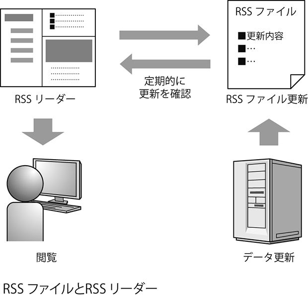
ＲＳＳリーダーの仕組みでは、決してＲＳＳファイル自体がサーバ側から「送られてくる」わけではない。ＲＳＳリーダーがユーザーに代わってサーバにアクセスし、ＲＳＳファイルの更新の有無を確認することで、見た目上はサーバ側から情報がやってくるように感じられるわけだ（このようにクライアント側から定期的にサーバにアクセスして最新情報を得る方法は「ポーリング」と呼ばれている）。
したがって、ＲＳＳリーダーの仕組みはあくまでも「疑似的」なプッシュ型情報配信なのだが、見た目上とはいえそれがいかに便利な仕組みかを知らしめたことが、その後のユーザーの期待や行動を変えるきっかけとなったと言えるだろう。
またＲＳＳにはもう一つ重要な意義がある。それは「マッシュアップ（mashup）」という手法と組み合わさることで、コンテンツがウェブ上のさまざまな場所に転用されることを容易にしたという点だ。
マッシュアップとは、直訳すれば「すりつぶす」という意味なのだが、ウェブ上ではいくつかのコンテンツやサービスを組み合わせる手法を指す言葉である。
例えばよく見かけるウェブサービスに、「美味しいレストランリスト」などといった店舗情報をリスト形式で表示すると同時に、その所在地をグーグルマップ上に表示するというものがあるが、これは自ら用意した「美味しいレストランリスト」というコンテンツと「グーグルマップ」というサービスをマッシュアップして作られたものだ。
マッシュアップは２００６年ごろから流行を始め、ＡＰＩを通じて実現されるものが多かったが、コンテンツを取得する手段としてＲＳＳも活用された。
例えば企業サイトのトップページに企業ブログのＲＳＳを組み合わせ、ブログの更新情報を自動的に告知するといった具合である。その他にも、ブログのサイドバーに関連情報を表示させるなどといった場面でＲＳＳが活用されている。
つまりＲＳＳによって、ユーザーがあちこち歩き回らなくても、最新の情報がさまざまな場所（特にユーザーの目に留まりやすいような場所）に出現するようになったわけだ。それ以前はたとえデジタル情報といえども、更新されたことにしばらくは気付いてもらえないのが普通だったものが、更新された情報がリアルタイムに近いタイミングでユーザーの元に届けられることが普通になったのである。
プッシュ型配信技術の進化
ＲＳＳによって実現されるリアルタイム性は、あくまで見かけ上のものであり、実際にはタイムラグ（サイトが更新されてからそれをユーザー側で把握するまでの時間）が発生することは避けられない。
しかし一度リアルタイムの可能性が示されると、ユーザーの期待はいやが上にも高まることとなる。そこでＲＳＳ以降、さまざまな方式を使って、プッシュ型情報配信を進化させようという動きが本格化してきた。少し技術よりの話になるが、ウェブの裏側でどのような試行錯誤が続けられてきたのか、簡単にまとめておこう。
・Ｃｏｍｅｔ
２００６年に登場した手法が「Ｃｏｍｅｔ」だ。ここではユーザー側から情報取得のリクエストがあった際に、サーバ側ですぐに反応を返さず「待ち」の状態を意図的に作り、更新が発生した際にユーザー側に情報を送るという仕組みを採用している。これもＲＳＳリーダーと同様、あくまで疑似的なリアルタイムであり、またわざと「待ち」を発生させるためサーバ側のリソースを無駄に消費するという欠点があったが、さまざまなサービスでリアルタイム性を実現するために採用された。
実際にＣｏｍｅｔが使われているウェブサービスとして、ウェブブラウザ上で動くチャットサービス「リンガー（Lingr）」（既にサービスを停止）、友人の間でイベント管理ができる「レンクー（Renkoo）」（同じくサービス停止）、複数のＩＭ（インスタントメッセンジャー）サービスを統合し、一つの画面で管理できる「ミーボ（meebo）」などがある。
・ＸＭＰＰ
ＸＭＰＰはＩＭ用の技術なのだが、これを活用してリアルタイム性を実現する方法が模索されている。
ＸＭＰＰはもともとジャバー（Jabber）というＩＭ用に１９９８年に開発されたもので、柔軟な活用ができるように設計されており、さらにオープンソース化されてさまざまな追加仕様が加えられてきている。また２００４年には、インターネット技術の標準化団体であるＩＥＴＦによって、インターネット標準として承認された。その結果、ＩＭだけでなく幅広い種類のツールやサービスを実現する際にも役立てられるようになっている。
有名なアプリケーションとしては、グーグルのＩＭツールである「グーグルトーク」、マックＯＳＸの「アイチャット（iChat）」で使われているのがこのＸＭＰＰだ。
また「企業向けツイッター」としてしばしば紹介されるミニブログサービス「ヤマー（Yammer）」や、ファイル共有サービスの「ドロッピオ（drop.io）」、リアルタイム検索サービスの「コレクタ（Collecta）」などもＸＭＰＰを活用している。変わったところでは、チェスファンのためのＳＮＳ「チェスパーク（chesspark）」（現在はチェスドットコムに統合されている）が、ＸＭＰＰを使ってウェブ上でリアルタイム対戦ができるチェスゲームを構築している。
現在、フェイスブックのチャット機能「フェイスブックチャット」もＸＭＰＰへの対応を始めている。５億人というユーザーを持つサービスでサポートされたということは、ＸＭＰＰのさらなる普及を期待する上で非常に重要だろう。
・ＰｕｂＳｕｂＨｕｂｂｕｂとＲＳＳクラウド
さらに近年、リアルタイム情報配信の先駆けとなったＲＳＳの仕組みを進化させようという動きも出ている。
その一つが「ＰｕｂＳｕｂＨｕｂｂｕｂ（パブサブハバブ、以下ＰｕＳＨと略す）」という、呪文のような名前を持つ技術だ。ＲＳＳとＲＳＳリーダーを使った仕組みの場合、サーバ（パブリッシャー）側にあるＲＳＳファイルを、クライアント（サブスクライバー）側にあるＲＳＳリーダーが一定間隔で読みに行くため、どうしてもタイムラグが発生する。
ＰｕＳＨではこの２つの間に「ハブ」を設置し、データの更新が行われた際には「ハブ」がプッシュ型でクライアント側に情報を伝えるという仕組みを取ることで、リアルタイム性を実現している。
さらにＲＳＳという既存の枠組みの延長線上に構築できる点や、スケーラビリティの点でも優れている点、さらにユーザー側での対応が最小限で済むといった点などもメリットとして挙げられている。
ＰｕＳＨはグーグルのＲＳＳリーダー「グーグルリーダー」が対応したことで話題となり、日本でもライブドアがブログＲＳＳに採用して注目を集めている。オープンプロトコルのため、その実力さえ証明されれば、対応しようという企業やサービスがさらに増えることだろう。
またＰｕＳＨとほぼ同様の仕組みによって、ＲＳＳのリアルタイム性を向上させようという技術が「ＲＳＳクラウド（rssCloud）」だ。
これはＲＳＳの育ての親であるデイブ・ワイナーが関与している規格で、実は２００１年というかなり早い段階から発表されている技術なのだが、ＰｕＳＨへの関心が高まることで、改めて注目される形となっている。
このように、真の意味での「プッシュ型配信」を実現するため、ウェブ技術の面でさまざまな試行錯誤が繰り返されてきたのが近年の状況だと言えるだろう。ユーザー側の視点に立つと、ＲＳＳの時代から見かけ上は目立たないかもしれないが、裏側ではリアルタイムウェブの実現が急ピッチで進められていたわけである。
クラウドコンピューティングの貢献
リアルタイムウェブの実現を側面から支援したものとして、クラウドコンピューティングの普及も指摘しておく必要があるだろう。
あまり想像したくないことだが、何らかの事件や事故の現場に遭遇したとしよう。あなたはとっさに写真を撮り、このニュースを写真付きで誰かに伝えようとする（野次馬行為の是非は重要なテーマだが、ここでは議論に立ち入らないことをお許しいただきたい）。そんなとき、画像データをＰＣの中だけにしか置くことができない状況だったとしたら、情報をどこまで迅速に伝えることができるだろうか？
データをいちいちＰＣから送信しなければならず、またそのＰＣを抱えて移動しなければならないという状況では、タイムラグが発生してしまうことは避けられないはずだ。
しかし現場を撮影した瞬間に、撮影した端末から「クラウド」の側へデータを転送できるのが、クラウドコンピューティングが普及した現在の世界である。
第１章でも述べたように、現実世界の状況がインターネット内の世界へと反映されるまでの時間が短縮され、データそのものの鮮度が向上しているのだ。いくらデータを伝達する速度がリアルタイム化しても、データそのものが古ければ価値は半減してしまう。いつでも・どこからでもデータ処理を可能にするクラウドコンピューティングの普及は、リアルタイムウェブを支える車輪の一つなのである。
その最も良い例がユーストリームだろう。従来であれば、生中継という行為を実現するためにはテレビ中継の施設と機材を用意するか、ストリーミング用のサーバを用意しなければならなかった。
仮に目の前で大事件が起きていたとしても、一般人がそれを伝えようとすれば、ビデオ撮影してユーチューブにアップロードするぐらいしか方法がなかったわけである（それでもウェブ２・０以前の時代と比べれば、革命的な進歩と言えるのだが）。
しかしユーストリームのおかげで、ユーザーは撮影用のカメラ（専用アプリがインストールされていれば、ｉＰｈｏｎｅでも可能だ）さえあれば、撮影以外の処理をクラウド側にすべて任せることが可能になった。もはや目の前の世界を、そのままデジタルの世界へと流し込むことが可能な時代なのだ。
さらにクラウドコンピューティングは、リアルタイムウェブを支えるインフラとしても貢献している。
リアルタイム以前のウェブサービスでは、アクセスしたときにサーバがダウンしていたとしても、問題が発生するのはウェブメールなどといった一部のサービスに限られていた。しかし「今この瞬間に情報が提供されること」に価値が生まれるリアルタイムウェブでは、当然ながら「今アクセスが集中しているので後で閲覧してくれ」などというお願いをすることは許されない。
極端な話をすれば、朝の通勤ラッシュの時間帯にユーザーが殺到するサービス（交通機関が乱れた際に自動的に迂回ルートを示してくれるサービス、などといったものを思い浮かべていただければよいだろう）があった場合、１週間の中の数時間、数分に集中するトラフィックを処理できなければならないのである。
大企業が提供し、しかも既に収益性が見込めるサービスであれば、そのようなピーク時を見込んだシステムを開発することは可能だろう。しかしリアルタイムウェブは新しい概念であり、まだ確固たるビジネスとして打ち立てられてはいない。
したがって既存企業は手を出さず、ベンチャー企業がサービス提供に取り組むことが多くなる。一昔前であれば八方塞がりといった状況だが、それを覆したのがクラウドコンピューティングの普及であった。
必要なときに必要なだけのコンピューティング・パワーを利用できるクラウドサービスであれば、初期投資がいらず、しかも突発的なトラフィックの増加にも対応することができる。まさにベンチャー企業がリアルタイムウェブ系サービスの提供に乗り出す上で理想的なインフラなわけである。
例えばツイッターは、Ｅコマースサイトで有名なアマゾン（Amazon）社が提供するクラウドサービス「アマゾンＳ３（Amazon S3）」および「アマゾンクラウドフロント（Amazon CloudFront）」を利用し、アイコン画像の配信などを行っている。
マイクロソフト社のパワーポイント上で、リアルタイムな共同作業を実現する「サークルドック（CircleDoc）」というサービスも、共有するデータをアマゾンＳ３上に保管することでこの機能を実現している。
さらにグーグルが提供している「グーグルアップエンジン」はウェブサービスを開発・運用できるクラウドサービスで、手元に何らハードウェアを持たなくてもリアルタイムウェブ系サービスを構築することができる。
同様に、米フェイスブック社が発表した「トルネード（Tornado）」というサービスは複数のウェブアプリケーションが統合されたもので、リアルタイム系サービスを開発する際のプラットフォームとして利用することができる。
このようにリアルタイムウェブとクラウドコンピューティングは、裏側で密接に関わり合っていると捉えることができるだろう。リアルタイムウェブへの注目の高まりが、クラウドコンピューティングの普及後にやってきたのは、決して偶然ではないのである。
「ウェブ上のデータをリアルタイムで伝える」と書くと、一見何でもないことのように感じられるかもしれない。
実際、見かけ上ではソーシャルメディアなど他の変化の方が目に付きやすく、本章で解説したような「リアルタイム化」が進行していたことを再認識したという方も多いだろう。実際には数年前と比較しただけでも、ウェブ上には驚くほど新鮮な情報が飛び交うようになっている。そしてそれを実現するために、さまざまな技術の革新が進められてきたわけである。
第３章 モバイル技術の重要性
リアルタイム「ウェブ」に足りないもの
ウェブ技術の進化によって、ウェブ上にある情報をリアルタイムでやり取りすることが可能になった。これでリアルタイム「ウェブ」は達成されたわけだが、果たしてこれだけで、革新的と呼べるほどの価値をもたらすことが可能だろうか。
「東京駅なう」というメッセージを考えてみよう。リアルタイムウェブのおかげで、こう書き込むだけで自分の居場所を即座に伝えることが可能になった。しかし「東京駅なう」と発信するのは、文字通り「今」東京駅にいるときでなければ意味がない。買い物から帰ってＰＣの前に座り、悠長にネットに接続するのでは遅いのだ。
このように、いくら「ウェブから先の世界」における情報の流れをリアルタイム化したとしても、「ウェブに入るまでの世界」の情報をリアルタイム化できなければ、リアルタイムウェブの価値は半減してしまうことだろう。
「今東京駅にいる」という情報が生まれた瞬間に、それをデジタル化し、ウェブ上に流し込む技術---あえて冗長な書き方をしたが、要はモバイル技術の進化と普及が、リアルタイムウェブを充実させるためには欠かせないのである。
先進的な日本のモバイル環境
このように書くと、「何を当たり前のことを」と言われてしまうかもしれない。しかし改めて文章にしたのは、この点が意外と日本の中では意識されていないのではないかという思いがあるからだ。
モバイル技術と、それを活用したサービスについては、これまで日本の方が世界に先駆けて動いてきている。それだけに、日本社会のリアルタイム性は過小評価されているのではないだろうか。
２００９年に日本でツイッターブームが起きたとき、ツイッターを企業で活用する際のアイデアの一つとして、タイムセールの告知を行うというものが紹介された。ツイッターのリアルタイム性を利用して、「今から〜分以内にご購入いただければ半額！」というようなメッセージを流すわけだ。
実際にこの手法は多くの企業で採用され、現在でもフラッシュマーケティング（割引などの特典が付いたクーポンを期間限定で発売し、ネット上で瞬間的に顧客を集める手法）などといった形で引き継がれている。
これを読んで、携帯電話のメールを使ってセール情報を流したり、クーポンを配布したりするという取り組みを思い出された方も多いのではないだろうか。
ケータイメールとツイッターではメディアの性質はまったく異なるが、モバイル端末が常にユーザーの傍にあるという性質を利用するという点では大差はない。世界に向けて紹介されたり、ビジネスモデルが輸出されたりすることが少ないだけで、日本企業の取り組みは先進的なのだ。
話をネットに限定しよう。日本では１９９９年にＮＴＴドコモから「ｉモード」が発表され、携帯電話からインターネットにアクセスするという利用形態が生まれることとなった。つまり「ケータイでウェブ」には、既に10年以上の歴史があるわけである。
ｉモードの発表以降、国内の携帯電話は瞬く間にウェブアクセスの機能を取り入れることとなり、さらにデータ通信の料金を一定に抑えることができる「パケット定額制」が２００３年ごろから導入されたことで、利用頻度も拡大していくこととなった。またウェブサービスを提供する側でも、通信回線が細い状況でも問題が生じないよう、携帯電話専用のウェブサイト（ケータイサイト）を用意するという対応が行われるようになった。
こうした背景により、現在の日本では、モバイル端末からウェブを利用することはごく普通の行為となっている。総務省の調査によれば、２００９年末の時点で、モバイル端末からインターネットを利用している人々は８０１０万人。これは国内ネットユーザー（９４０８万人）の85パーセントに相当する数だ。さらに「モバイル端末からのみネットに接続する」というユーザーが全体の約10パーセントに当たる８８５万人も存在している（※１）。
特に若者の場合はこの傾向が顕著だ。生活習慣として「携帯電話から情報を得る」という行動が若者の間で定着していることが、各種調査から明らかになっている。
例えば２００８年にＢＰＯ（放送倫理・番組向上機構）が16歳から24歳の若者を対象に行った調査によると、「あなたにとって重要なメディアは」という質問に対し、約70パーセントの回答者が「携帯電話」を１位に挙げている。
しかもこれは「パソコン」（16・１パーセント）および「テレビ」（11・６パーセント）を大きく引き離した結果であり、若者にとって携帯電話がいかに欠かせないメディアになっているかを示す結果となった（※２）。ちなみに同調査では、ネット利用の面においても、若者はＰＣより携帯電話の方を活用しているという結果が出ている。
「リアルタイムウェブ」を先取りしていた若者たち
若者がいかにケータイサイトを活用しているかという点について、一つ面白い事例を紹介しておこう。
２００７年ごろに、「プロフ」というジャンルの携帯電話向けサービスが話題を集めた。これは自分のプロフィールをまとめたページを簡単に作成できるというもので、「前略プロフィール」などの大手をはじめ無数のサイトが存在している。女子中高生を中心に、ブログやＳＮＳを上回るほどの流行を見せていたのだが、特に注目されたのはその使われ方だ。
携帯電話向けサービスということもあり、「プロフ」自体はそれほど凝った機能を有しているわけではない。「好きな芸能人」や「将来の夢」など、簡単な質問のテンプレートが用意されており、それに答えるだけでプロフィールが出来上がるという仕組みだ。
こうして出来上がったプロフィールは、しばらくそのまま放置されると考えるのが普通だろう。何しろ「プロフィール」なのだから、更新するタイミングは卒業や引越しがあった時など、多くても数年に一度のはずだ。
しかし「プロフ」の場合、まるでブログのように頻繁に更新し、メッセージを伝えるコミュニケーションツールとして使うというユーザーが多かったのである。
この現象について、ＩＴメディアの岡田有花記者は「中高生版Ｔｗｉｔｔｅｒ？ ケータイ『リアル』をのぞいて驚いた」という記事の中で、次のようにまとめている。
プラットフォームを提供する〝大人〟が想定した枠を超え、ユーザーが使い方を発明して広げていく---10代に人気の携帯コミュニティでは、よく見られる光景だ。
「前略プロフィール」が好例だろう。プロフィールを作るだけのシンプルなサービスだったはずが、10代のユーザーは、「プロフィールをどんどん更新し、近況を伝えていく」という使い方を〝発明〟。事業者も知らないうちに口コミで広がり、コミュニケーションインフラになっていった（※３）。
ツール自体はリアルタイム性に特化しているわけではないにもかかわらず、ユーザーの側が使い方を工夫することで、疑似的なリアルタイムコミュニケーションの場にしてしまう。
こういった状況はプロフ以降も続いているのだが、日本のモバイルユーザーたちがいかに「リアルタイム」を先取りしていたかを象徴するものだろう。
スマートフォンの貢献
一方、海外の国々においても、モバイル端末からウェブを活用するというスタイルが定着しつつある。
例えば２０１０年１月に米国の調査機関ピュー・リサーチセンターから発表された調査結果によれば、米国内の成人のうち、携帯電話もしくはスマートフォンを所有しているのは83パーセント。その中でこれらのモバイル端末を使ってインターネットにアクセスしているのは、35パーセントという結果が出ている。日本に比べればまだ割合は小さいものの、この数値は着実に上昇している（※４）。
特に注目すべきなのは、スマートフォンの流行だ。米調査会社のガートナーによれば、２０１０年半ばの時点で、全世界の携帯電話市場におけるスマートフォンの占有率が約19パーセントに達している。つまり携帯電話の５台に１台がスマートフォン、という時代が既にやってきているのだ。
その独自性から「ガラパゴス」と揶揄されてきた日本国内の携帯電話利用状況にも、次第にスマートフォンが存在感を示すようになってきている。
例えばＭＭ総研が２０１０年８月に発表したレポートの中で、２０１５年における日本国内のスマートフォン年間販売台数は２０００万台に達し、全携帯電話における販売台数比率は約55パーセントに達すると予測。
さらに携帯電話端末契約数に占めるスマートフォン契約率においても、２０１５年末までに40パーセントに達すると見込んでいる（※５）。
スマートフォンの貢献は、モバイル環境からウェブサービスを活用できるようにするという点に留まらない。場合によっては、ＰＣからアクセスした場合以上に、リアルタイムウェブの活用を促進することが考えられる。その理由は、スマートフォンに搭載された各種の機器類だ。
日本ではカメラ付き携帯電話がもはや当然の存在になっているが、それがスマートフォンによって世界的な傾向になることが考えられる。これにより、リアルタイムにやり取りされるのはテキストデータだけでなく、画像やライブ動画を使ったコミュニケーションも一般的な行為になるだろう。
実際にユーストリームにおいては、ｉＰｈｏｎｅで撮影中の映像データをリアルタイムで転送するアプリが登場しており、いつでも生中継を開始することができる。リアルタイムウェブがＰＣ上だけの存在だったとしたら、このような状況を実現することは不可能だった。
さらにスマートフォンにおいては、ＧＰＳや加速度センサー、電子コンパスといったセンサー類を搭載することが一般的になりつつある。今後はユーストリームのｉＰｈｏｎｅアプリのように、スマートフォンからリアルタイムウェブにアクセスすることの意味を十分に活かしたサービスが普及することだろう。
位置情報サービスの流行
そのもう一つの例を紹介しよう。最近人気を集めているウェブサービスのジャンルに、位置情報サービス（ロケーションベースサービス／ＬＢＳ）がある。その名の通り、位置情報を利用してさまざまな価値を実現するサービスであり、他のユーザーとのコミュニケーションを可能にするものや、ゲームなどのエンターテインメントを目的としたものなどその形態はさまざまだ。
実はこの分野でも、日本のサービスは先行していた。例えば「ケータイ国盗り合戦」や「コロニーな生活☆ＰＬＵＳ（コロプラ）」など、いわゆる「位置ゲー（位置情報ゲーム）」と呼ばれる分野が２０００年代初期から存在している。
これらのサービスでは、携帯電話が電波を受信している基地局から割り出した「簡易位置情報」を利用しているため、端末の詳細な位置を把握することはできない。しかし逆に携帯電話であれば、ＧＰＳなど特殊な装置が付いていない端末であっても、サービスを提供することが可能なわけである。この点も海外に先駆けてサービス展開が進められた理由の一つだ。
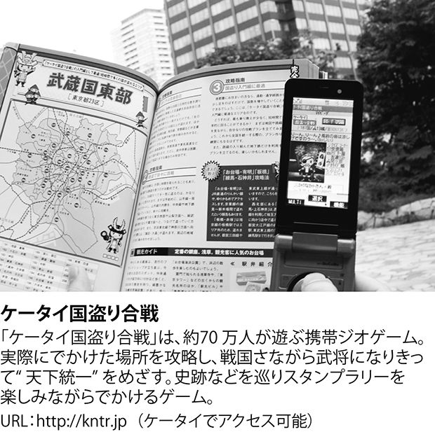
そしてＧＰＳを搭載したスマートフォンの普及により、２００９年ごろから海外でも「フォースクエア（foursquare）」や「ゴワラ（gowalla）」「マイタウン（MyTown）」などといった人気サービスが登場するようになり、数多くのユーザーを獲得することに成功している。
特にフォースクエアはＬＢＳ分野を代表する企業として扱われており、２０１０年８月にはユーザー数が３００万人を突破。さらに２カ月後の10月には４００万人を突破するなど、成長に拍車がかかっている。また大手企業による買収のうわさも飛び交い始めた。
ちなみにフォースクエアを創業したのは、グーグルに買収されてその後サービスを停止した「ドッジボール（Dodgeball）」という携帯ＳＮＳサイトの元社員たちだ。フォースクエアの躍進は、裏返して見ればグーグルの新事業マネジメントのまずさも意味している。
またフェイスブックも位置情報サービスに参入しており、「フェイスブック・プレイシズ（Facebook Places）」という機能が２０１０年８月から提供されている（日本語版では「スポット」と称され、同年９月に利用可能になった）。
さらに11月には、この機能を使って自分が今いる場所を発信すると、近くにある店舗の割引情報が入手できる「ディールズ（Deals）」というサービスも開始された。世界最大のＳＮＳに追加された位置情報サービスということで注目度も高く、「ディールズ」にはＧＡＰやスターバックス、マクドナルドなどといった著名企業22社が既に参加している。
こうした海外での「ＬＢＳブーム」が日本に逆輸入され、改めて国内でも関連サービスが新登場したり、従来からあるサービスに位置情報系機能が追加されたりという状況も生まれている。ライブドア社の「ロケタッチ」、はてな社の「はてなココ」などが前者の代表例で、いずれもスマートフォンに対応している点が象徴的と言えるだろう。またミクシィの「ｍｉｘｉチェックイン」は後者の代表例であり、２０１０年９月のリリースから１カ月で、同サービス内の情報投稿件数が２００万件を超えたと発表されている（※６）。
以上のような位置情報サービスの動きからも分かるように、リアルタイムウェブはＰＣとウェブブラウザの世界を離れ、スマートフォンに代表される高機能なモバイル端末によって実現される世界へと進出し始めている。
世界のありとあらゆる場所から、テキストだけでなく音声や動画、位置情報が投稿され、それをリアルタイムで授受する。「ウェブ」という名前で呼ばれてはいるが、リアルタイムウェブは従来のウェブとは大きく異なる姿で活用されることだろう。
「ＰＣ＋ブラウザ」から「モバイル＋アプリ」へ
日本において「ケータイサイト」という動きが生まれたように、最近ではスマートフォンユーザー向けに専用のウェブサイトを開設する企業が増えている。
さらに一歩進んで、サイトに標準のブラウザからアクセスしてもらうのではなく、専用のアプリケーションを提供してサービスを利用してもらうようにしているところも多い。
それには「より優れたユーザーインターフェースを実現するため」という理由もあるが、前述のようにスマートフォンにはさまざまな機能が搭載されるようになっており、それを活用したサービスを展開するためには、ウェブブラウザに頼るのは都合が悪いのだ。
専用アプリを開発するには当然コストがかかるが、一度開発・提供してしまえば、ブラウザからアクセスしてもらう場合とは比べものにならない程の価値をユーザーに提供することができる。
ピュー・リサーチセンターが最近発表した調査結果によると、米国内に住む成人のうち、35％が自分の携帯電話にアプリ機能があり、さらにその24％（つまり成人全体の約10％）がアプリを使っていると回答している（※７）。
そのすべてがインターネットを活用するものとは限らないが、既に人々の間には「モバイル端末＋専用アプリでサービスを利用する」という行動が定着しつつあると言えるのだろう。
さらにツイッターでは面白いデータが発表されている。ツイッターに流れ込むトラフィックのうち、およそ75％が外部クライアントからのものだというのだ（※８）。
つまりアクセス全体の４分の３は公式ウェブサイト以外からやってきているというわけで、このほとんどがツイッタークライアントと呼ばれる専用アプリであると見なされている。
また２０１０年の初めから９月までで、モバイル端末でツイッターを利用する人は２５０％増加し、新規利用者の16％はモバイル環境からツイッターデビューを果たしているということも発表されている（※９）。
実際に「ＰＣが目の前にあっても、リアルタイムウェブの利用はモバイル端末から」という人が少なくない。写真を撮ってすぐに送信できるから、位置情報が即座に記録されるからなど理由はさまざまだが、「ＰＣ＋ウェブブラウザ」という環境に加えて、「モバイル端末＋サービス専用アプリ」という環境からも利用することが、今後のウェブサービスの姿となる可能性が高いだろう。
ウェブに死が訪れる？
さらに一歩進んで、こうした「モバイル端末＋専用アプリ」という環境での情報流通の方が今後はメジャーになり、従来の「ＰＣ＋ブラウザ」というスタイルは衰退するという予測まで行われるようになっている。それを肯定的に捉えるか、否定的に捉えるかはさまざまだが、ここで識者３人の意見を紹介しておこう。
２０１０年８月、『ロングテール』（早川書房）や『フリー』（日本放送出版協会）といったベストセラーの著者として有名なクリス・アンダーソンが、自らが編集長を務める『ワイアード』誌上で挑戦的な特集を組んで話題を集めた。特集のタイトルは「ウェブは死んだ（The Web Is Dead）」（※10）。この場合の「ウェブ」とはウェブサービス全体のことではなく、私たちが慣れ親しんでいる「ブラウザ＋ＰＣ」から利用するスタイルのことであり、これが消えようとしているという主張である。
ＳＮＳのような例外はあるが、これまでのウェブでは情報がオープンな形で提供されており、したがってグーグルのような検索サービスを成立させることができた。しかし新しく登場した「モバイル端末＋専用アプリ」という環境は半ば閉じられたものであり、そこでは前述のようなユーザーにとっての利便性を提供できるだけでなく、企業にとってはサービス環境全体がコントロール可能になるという価値もあるため、これを追求しようというモチベーションが生まれやすい。
実際にインターネット上を飛び交うトラフィックの量を見た場合、従来の「ウェブ」が占める割合は年々低下しており、クローズドな環境におけるトラフィックの量が増加しつつある。このままの状況が進めば、オープンな「ウェブ」という姿は衰退するだろうというのがアンダーソンの主張だ。
この主張に対しては、トラフィックの比率で見るのが間違いであり、絶対量で見れば従来のウェブというスタイルも成長を続けているという反論がなされている。またユーチューブの動画再生に使われるトラフィックを「ウェブ」に含めないなど、データの捉え方についても議論の余地が大きい。
しかし「死んだ」という表現に若干大げさなところがあるとはいえ、アンダーソンが指摘した大きな潮流の変化という可能性については、十分検討に値するだろう。
またアンダーソンとは異なる視点から「ウェブの死」を予言する人物が、ハーバード・ロースクールのジョナサン・ジットレイン教授だ。彼は著書『インターネットが死ぬ日』（ハヤカワ新書juice）の中で、ネットのオープン性が逆にその衰退をもたらすと指摘している。
インターネットとパソコンは、過去に成功をもたらした特性を持つがゆえに弱体化しつつある。混沌とした設計であったからこそ情報革命が起きたわけだが、インターネットがあらゆるところに浸透した結果、そこから大きく外れる部分が生まれた。そして、反革命的なこの動きにより、革新と混乱を生む肥沃なインターネットからアプライアンス型ネットワークへと移動するユーザーが増えているのだ。インターネットの力強さを残しつつ、インターネットの革新する力を大きく制限し、かつ、よきにつけあしきにつけ管理性を強化したネットワークへだ。今後は、もっとパワフルで魅力的な独自規格ネットワークと情報端末が登場するだろう。インターネットとパソコンが持つ問題への対応がなされなければ、今後、ほかへの配慮がない各種の対策がとられ、現在の情報エコシステムが持つ長所が大きく損なわれることにもなろう（※11）。
ジットレインの言う「アプライアンス型ネットワーク」こそ、「モバイル端末＋専用アプリ」で実現されるウェブに他ならない。オープンで自由な環境が失われたとしても、手軽に使えて、かつスパムやウイルスなどに煩わされる可能性の低いスタイルの方を人々は選ぶようになるというわけである。
リアルタイムウェブにおいても、ブラウザを利用するよりも手軽で、さらにその特性に合った利用スタイルを可能にするアプリケーションが増えていることは既に述べた通りだ。
またツイッターを例に挙げると、ウェブブラウザから公式サイトにアクセスして利用した場合に発症するウイルスが出回ったケースがあり、専用クライアントからアクセスしようというユーザーが増加する一因となっている。
特に情報の流れの速いリアルタイムウェブの場合、さまざまなリスクに配慮して慎重に行動するというスタイルとは相性が悪く、管理された専用アプリの方を望むユーザーは増えてくることだろう。
アンダーソンとジットレインが比較的ネガティブな側面から変化を捉えている一方で、マイクロソフトでビル・ゲイツの後を継いでＣＳＡ（チーフソフトウェアアーキテクト）の座を務めていたレイ・オジー（ロータスノーツの開発者であったことから「ノーツの父」とも呼ばれている）は、「モバイル端末＋専用アプリ」で提供されるサービスこそが、現在のＰＣを中心とした世界の後に来たるべき姿であると述べている。
彼は２０１０年10月に、ＣＳＡの座を退くにあたって「新たな時代の夜明け」（※12）と題されたメッセージを発表しているのだが、その中でクラウドコンピューティングをベースとした「途切れないサービス（Continuous Services）」と、そのサービスが動作する端末である「接続されたデバイス（Connected Devices）」がＰＣ後の世界になると予想している。
そして情報処理の中心がクラウド側に移行するため、「接続されたデバイス」については、現在のＰＣ以上に形状・サイズ・用途の点でバリエーションが豊かになり、さらに電化製品のように使いやすくコモディティ的な存在になるだろうと述べている。
ここで原因とされているのは、現在の「ＰＣ側の処理をベースにサービスを実現する」という仕組みが複雑になり過ぎているという点だ。技術の成熟により、逆に複雑性が進行するというのはこれまでの技術史の中でも繰り返されてきたことであり、今回もクラウドを中心としたシンプルな環境に移行することは避けられないだろうとオジーは指摘している。
これからのサービスはクラウドを中心とした「途切れないサービス」となり、人々から信頼される形で、さまざまな場所に組み込まれてゆくこととなるだろう。クラウドコンピューティング自体が開発者とＩＴ企業にとって普遍的なものとなり、世界中の主要企業において、インフラや情報システム、ビジネスプロセスに大きな変化を引き起こすはずだ。そして新たなサービスは、未来のデバイスが実現する、非常に優れた環境と連携して動作することになる。今日のＰＣや携帯電話、タブレット型端末はその先駆けにすぎない。これから私たちは、「接続された企業」によって提供される驚異的なイノベーションを身につけ、持ち運び、それを身の回りにあるあらゆる環境で利用できるようになるだろう。サービスに接続されたデバイスは、「スクリーンとキーボードとマウス」というような姿から離れつつある。人間から見て自然な姿をした、「途切れないサービスを提供するデバイス」たちが、ユーザーやユーザーの周囲で起きることを見守り、ユーザーの操作やゼスチャー、動作を感知し、周囲に知人がいることを教え、ユーザーの居場所や向かっている方向、周囲の気温、そしてユーザーの健康状態などを感知するようになるだろう。
（Ray Ozzie,'Dawn of a New Day,'http://ozzie.net/docs/dawn-of-a-new-day/より抜粋。筆者訳）
オジーはこの変化をポジティブなトーンで捉えており、技術が進む方向について疑念を抱いていない。今生まれつつある流れを、「ウェブのオープン性の敗北」と捉えるか「情報処理という技術自体の進むべき方向」と捉えるかはさておき、これからウェブの姿は大きく変わってゆくと考えて間違いないだろう。
もちろん従来型のウェブがすぐになくなることはあり得ないが、今後は二極化が進み、場合によってはＰＣとウェブブラウザで利用するというスタイルの方がマイナーなものになる可能性は否定できない。
「マイクロソフトの10年」から「グーグルの10年」へと移り変わる中で、ＩＴの主戦場がＰＣからネットへと大きく変化したように、次の10年においても「戦場」そのものが変化する可能性が高いのではないだろうか。
「モノのインターネット」との接続
さらに将来的な予測として、人間以外の存在が生み出す情報についても、リアルタイムでウェブの世界に流入するようになる可能性を指摘しておこう。
近年、「モノのインターネット（Internet of Things）」という概念が登場し、実際に具現化が進められている。これはＲＦＩＤやセンサーなどの技術を活用することで、さまざまなモノとリアルタイムにデータのやり取りをすることを可能にしようという概念であり、日本で一昔前に提唱された「ユビキタスネットワーク」の概念に近い（この点でも日本は進化を先取りしている）。
その意味ではそれほど新規性のある話ではないのだが、ＥＵおよび中国が関連技術の標準化に乗り出していることで、改めて注目が集まっている。
またこの状況を後押ししているのが、スマートグリッドが先鞭を付けた「スマートシティ（スマートコミュニティ）」という潮流だ。スマートグリッドとは、電力網にＩＴ技術を組み合わせ、効率的な電力利用を可能とすると同時に新たなサービスを生み出そうという概念である。
例えば走行中の電気自動車（ＥＶ）のバッテリー残量を把握して、ネット経由で集中管理し、適切な充電スポットへと誘導するといったサービスが検討されている。さらに電力網だけでなく、他の社会インフラ（ガスや水道、交通インフラなど）と組み合わせれば、社会全体でより優れた管理が実現されることだろう。これが「スマートシティ」の発想だ。
もちろんこれはあくまでも理想型であり、現実にはさまざまな障害が予想され、一朝一夕に実現される話ではない。しかし具体的なサービスが想定されたことで、これまでの技術革新やサービス化に向けた動きが、一つの目標に向かって収束されつつある。
先ほどのレイ・オジーは、「新たな時代の夜明け」の中で「我々の業界（ＩＴ業界）では、想像できるものは創り出すことができる」と述べているが、まさしくこの状況が生まれつつあるのがスマートシティの分野と言えるだろう。
こうした背景から「モノのインターネット」が実現されれば、よりリアルタイムウェブに集められる情報が増すことになる。そこから新たなサービスが実現される可能性は非常に高いだろう。
例えばツイッターでは、機械的に情報を流す「ボット（bot）」と呼ばれるプログラムの制作が流行しており、中には「洗濯が完了したことをツイートしてくれる洗濯機」や「土が乾燥していることをツイートしてくれる植木鉢」などというアイデアまで登場している。
これらはまだまだ冗談のレベルにすぎないが、例えば何らかの警報をリアルタイムウェブ経由で自動的に発信するといった将来像が描けるだろう。また「人」に関する情報の場合も、先ほどのレイ・オジーの文章に登場したように、自動的に人間の身体に関する情報を集めるというケースが出てくるはずだ。
リアルタイムウェブが人と人をつなぐ場としてだけでなく、人とモノ、あるいはモノとモノをつなぐ場として進化することは間違いない。
※１ 「平成21年『通信利用動向調査』の結果」（総務省）
http://www.soumu.go.jp/johotsusintokei/statistics/data/100427_1.pdf
※２ 「『〝デジタルネイティブ〟はテレビをどう見ているか？
〜番組視聴実態３００人調査〜』報告」（ＢＰＯ青少年委員会）
http://www.bpo.gr.jp/youth/research/09_sympo_01.pdf
※３ 「中高生版Ｔｗｉｔｔｅｒ？ ケータイ『リアル』をのぞいて驚いた」（ITmedia News）
http://www.itmedia.co.jp/news/articles/0903/06/news118.html
※４ 'Internet, broadband, and cell phone statistics,' Pew Internet & American Life Project,
http://www.pewinternet.org/~/media//Files/Reports/2010/PIP_December09_update.pdf
※５ 「国内携帯電話およびスマートフォンの市場規模予測」（ＭＭ総研）
http://www.m2ri.jp/newsreleases/main.php?id=010120100831500
※６ 「位置情報サービス『ｍｉｘｉチェックイン』の投稿数が２カ月で２００万件」
（CNET Japan）
http://japan.cnet.com/news/service/story/0,3800104747,20421066,00.htm
※７ ' The Rise of Apps Culture,' Pew Research Center's Internet & American Life Project,
http://pewinternet.org/Reports/2010/The-Rise-of-Apps-Culture.aspx
※８ ' Live From Chirp: Twitter's Platform Roadmap,' TechCrunch,
http://techcrunch.com/2010/04/14/live-from-chirp-twitters-platform-roadmap/
※９ 「Ｔｗｉｔｔｅｒ統計情報：１日当たりのツイート数は９０００万件で
そのうち25％がリンク情報付き」（TechCrunch Japan）
http://jp.techcrunch.com/archives/20100914twitter-seeing-90-million-tweets-per-day/
※10 'The Web Is Dead. Long Live the Internet,' Wired,
http://www.wired.com/magazine/2010/08/ff_webrip/
※11 ジョナサン・ジットレイン著、井口耕二訳『インターネットが死ぬ日』
（早川書房、２００９年）17～18ページ
※12 Ray Ozzie, 'Dawn of a New Day,' http://ozzie.net/docs/dawn-of-a-new-day/
第４章 社会環境の変化
社会と技術の関係
ウェブとモバイル技術の進化により、誰もがいつでも、どこからでも、情報をリアルタイムにやり取りできる環境が整った。それでは、これであらゆる人々がラーメン屋から「ラーメンなう」とつぶやき出すかと言えば、当然ながら話はそれほど簡単ではない。
確かに「新しい技術が新しい行動を促す」という場合もあるが、そのようなプロダクトアウト的発想が常に正しければ、いまごろ技術力のある企業が各産業のトップ企業となっているだろう。
ところが実際には、むしろプロダクトアウトは「時代遅れのアプローチ」として批判されることの方が多い。人々の行動を変える要素として、人々の意識や文化といった社会環境を無視することはできないのだ。
アップル社を例に挙げよう。ご存じのように、同社は現在ｉＰｈｏｎｅで大成功を収めており、卓越した製品を提供する企業として評価されている。しかし１９９０年代には同じ携帯端末として「ニュートン（Newton）」というＰＤＡに取り組み、大失敗を犯しているのだ。二つの端末を単純に比較することはできないが、アップルといえども、単に優れた機器を創るだけでは社会現象を生み出すことは不可能なのである。
逆に第３章で紹介したように、日本では何の変哲もないモバイルサービス「プロフ」を応用することで、若者たちがリアルタイムにメッセージを発信するといった現象が起きている。
何かをしたいというニーズさえ存在すれば、人々はそれを達成するために既存の手段を組み合わせようとするのである。技術は新しい音を生むギターの弦というよりも、生まれた音を増幅し、大勢の人々が聴くことを可能にするアンプのようなものと捉えることができるだろう。
それではリアルタイムウェブという変化が生まれてきた理由について、社会環境の面からはどのような考察が可能なのだろうか。
スピードを求める人々
まず容易に想定できるのは、情報にスピードを求める人が増えてきたのではないかという仮説だろう。ニュースと言えば毎朝の新聞か、朝と夜のテレビ番組で十分と考える人々ばかりであれば、そもそもリアルタイムに情報を配信する技術など見向きもされないはずだ。
一分一秒の情報を争う世界にいる人々は、これまでも常にある程度存在していた。例えば証券や先物取引といった世界に携わる人々や、ジャーナリズムの世界で働く人々である。しかしそういった世界で競争しているのは、全体から見ればごく一部の人々であり、社会現象を引き起こす要因としては弱いだろう。
そもそも彼らが欲している情報は他人に知られてはならない種類のものであり、誰もが目にできる場所での情報流通が加速している理由としては考えにくい。
それでは「普通の人々」までもがリアルタイムな情報を欲するようになってきているのだろうか。この点について、『ウィキノミクス』（日経ＢＰ社）の著者として有名なドン・タプスコットが興味深い調査結果を発表している。
彼は自らが会長を務めるコンサルティング企業・エンジェネラにおいて、世界中の若者に対するリサーチプロジェクトを実施中だ。これまでに世界で約１万人の人々にインタビューし、その結果を『デジタルネイティブが世界を変える』（翔泳社）という本にまとめているのだが、この中でタイトルにもなっている「デジタルネイティブ」世代（調査の時点で11歳〜31歳前後の若者）の情報に対するスピード感覚について、タプスコットは次のように解説している。
デジタルの中で育ってきたネット世代はスピードを当然のものとして受け止める。それはビデオゲームに限った話ではない。一日二四時間、休みなしで瞬時の応答を期待する。ビデオゲームでは瞬時のフィードバックが得られる。グーグルは検索要求に対して瞬く間に回答する。ゆえに、ネット世代は世界中の誰もが迅速に応答するものだとみなす。インスタントメッセージには常に迅速な回答が返ってくるべきと考えている。（中略）
また、ネット世代は購入した商品が数日で到着することを期待する。もはや、シリアル食品の箱のタグを送って、秘密のアイテムが送られてくるのを何週間待つことはない。質問に対して迅速に回答する企業は賞賛され、信頼できる存在と見なされる。一方、長い待ち時間は批判の対象になる。言うまでもないことだが、ネット時代は待たされることを嫌うのだ。
ネット世代の八パーセントは、企業に電子メールを送ると即座に返信が来ることを期待する。しかし、ネット世代にとって友だちとのやり取りでの電子メールは遅くてやっかいな存在だ。ネット世代はインスタントメッセージングのスピードを好む（※１）。
このリサーチは世界中の若者を対象にしたもので、特定の国に偏った状況を示しているわけではないが、これを読んで日本の若者を思い出した方も多いのではないだろうか。
ケータイを肌身離さず持ち歩き、食事中だろうが何だろうが辺り構わずメールのやり取りをする若者の姿は、日本では「中毒」などと揶揄されることが多い。しかし程度の問題はあれ、情報の受信・発信の両面で速さを求める姿勢というのは、世界各国の若者の間で一般的なものになりつつあるのだ。
プライバシー意識の変化
次に影響を与えると考えられるのは、プライバシーに対する意識だろう。情報がリアルタイムでやり取りできるようになり、さらにリアルタイムな情報を望む人々が増えたとしても、公の場で情報発信することに抵抗感を感じる人々ばかりだとしたらどうだろうか。
家族に対する携帯電話からのメールや、ＩＭのような場で「今ラーメンを食べているよ！」などといったメッセージが投稿されることはあっても、ツイッターで「ラーメンなう」というつぶやきを目にするのはごく稀なケースとなるだろう。ところが現実はそれと逆の状態になっているということは、プライバシー意識に変化が生じていることが考えられる。
第１章で解説したように、かつてウェブ上で情報発信するという行為は、限られた人々に許されたものだった。それがウェブ２・０の時代になり、誰もが簡単にウェブを介したコミュニケーションに参加できるようになったばかりか、物心ついたときからそれが日常の一部となっている若者たちも、もはや珍しい存在ではない。
そういった若者たちは、以前は「公にすべきではない」と避けられていたような情報、例えば顔写真や実名、居住地などといったものでも、ネット上で公開することに抵抗がなくなってきているという調査結果が数多く発表されている。
例えば米国ピュー・リサーチセンターが２００７年に発表した調査結果によると、米国に住む若者（12歳から17歳まで）の中でインターネットユーザーのうち、55パーセントがオンライン上でプロフィールを公開していた。その中でファーストネームを公開していたのは89パーセント、ラストネームでは29パーセントに達する。
さらに自分の写真を公開していたのは79パーセントで、住んでいる場所については61パーセントだった。さらに少数ではあったが、フルネームと自分の写真を公開し、住んでいる場所まで明かしている若者も３パーセント存在している（※２）。
なぜ若者たちは、プライベートな情報を公開することに抵抗感を感じない（ように見える）のだろうか。先ほどのドン・タプスコットの意見を再び紹介すると、彼は「デジタルネイティブ」世代の若者たちの間に、プライベートな情報をある程度晒してもデメリットはない、むしろさまざまなメリットがあるという態度が広まっていると指摘している。
ネット世代の情報のオープン化は両親の世代を驚かせるレベルのものだ。フェイスブックの熱心なユーザーの多くが（恥ずかしい写真も含めて）自分や他人に関する情報を友人たちに見せるために公開している。ほとんどの人は悪意でやっているのではない。おもしろい、楽しいと考えている感覚を他者と分かち合いたいだけなのだ。明らかに、ネット世代はなぜプライバシーが重要であるかを理解していない。カーネギーメロン大学による二〇〇七年の調査では、授業のスケジュールを非公開にすることが重要と考えている者の四〇パーセントがそれをフェイスブックで公開しており、政治的見解を隠しておくべきだと考える者の四七パーセントがやはりフェイスブックに投稿している（※３）。
若者たちの姿勢は、プライバシーを気にしないというよりも、「プライバシーが多少は犠牲になってしまっても、それによって生まれる楽しいこと、つまり他人とのコミュニケーションの方に目を向ける」ものと言えるのではないだろうか。いずれにせよこうしたプライバシーに対する態度の変化が、ウェブ２・０のころから始まり、リアルタイムウェブにおいてもコンテンツの充実に貢献していると考えられる。
プライバシーよりスピード感が大事？
それでは、こうした姿勢は実際のサービスでどのように現れているのだろうか。再度ツイッターを例に挙げてみよう。
「１４０字までしか書き込めない」という制限があるにもかかわらず、ツイッターのユーザー数は短期間に爆発的な伸びを見せた。その理由についてはさまざまな角度から検証がなされているが、実際に使っている人々はツイッターに何を求めているのだろうか。
富士通総研が２０１０年３月に発表した調査結果によると、ツイッターの利用者がそのメリットとして挙げたのは、「リアルタイムで情報発信ができる」が52・５パーセントで第１位だった。第２位が「ブログより更新が簡単」（52・２パーセント）と、情報発信の面での優位性が挙げられている。さらに第３位は「新鮮な情報がある」（41・３パーセント）だった。この結果では特に、10代・20代の回答者がツイッターのリアルタイム性を評価する傾向が出ていた（※４）。
ツイッターは情報発信ツールであり、この傾向はある意味で当然の話だろう。しかし単なる情報発信だけでなく「リアルタイム性」が意識されている点に注意が必要だ。「ウェブ上の情報発信」というだけであれば、従来のブログやＳＮＳなど、少し前に流行したばかりのウェブ２・０系ツールを利用すれば十分なはずである。
にもかかわらず、改めてツイッターというツールが求められた背景には、単なる情報ではなく、リアルタイムな情報を自ら発信したい（そして同時に受信したい）というニーズの高まりがあると考えられるだろう。
さらに興味深い取り組みを紹介しよう。ＫＤＤＩグループの中で新技術の調査研究を行っているＫＤＤＩ研究所は、２０１０年10月に開催された国際見本市「シーテック（ＣＥＡＴＥＣ）」において、ツイッターユーザーの人物像（プロフィールに書かれている情報ではなく、リアルな個人的情報）を、ツイートを分析することで推定するという技術を出展した。
書き込まれている内容だけで、そのユーザーの年代や性別、職業などが割り出せるというのである。この仕組みと精度について、ＫＤＤＩ研究所は次のように説明している。
たとえば、日常のコメントに「学校」や「部活」、「宿題」などの単語が頻繁に見られるユーザーは、年齢が「10代」で職業が「学生」と推定できます。他にも、日常のコメントに「梅田」、「なんば」、「やねん」のような単語が頻繁に見られるユーザーは関西に居住していると推定することができます。本技術の性能を検証するため、Ｔｗｉｔｔｅｒ上でプロフィールが確認できたユーザー約１００００人のプロフィールを本技術を利用して推定したところ、年齢は80・２％（20代は89・５％）、性別は78・３％、出身は72・６％など高精度に推定できることが確認できました（※５）。
もちろんこの技術は素晴らしいものだが、裏を返せば、それだけツイッター上には個人特定に役立つ情報が書き込まれているということだろう。20代の方が推定の精度が高くなるという結果も、若者の方がプライバシーにあまり配慮していないという傾向を反映したものということが考えられる。
先ほどの「プライベートな話かどうかはあまり気にせず、コミュニケーションの楽しさを重視したい」という姿勢が、ここでも確認できるのではないだろうか。
アンビエント・アウェアネス
さらに若者に限らず、個人的な情報を公開することで生まれる「つながり」の価値が、次第に社会の中で理解されるようになってきている可能性が指摘されている。
「今日の昼食に何を食べたか」といったごく個人的な情報は、本書の冒頭でも述べたように、いかに最近のウェブが無意味なものかを示す証拠として指摘されることが多い。
しかし表面的には何の価値もない情報に見えても、それが人間関係の形成に大きく役立つ可能性があるのだ。
例えば顔の表情や歩き方、あるいは水を飲む仕草やドアの開け閉めといった行動に至るまで、ささいな行動の中には、その人の心境や肉体的な状況を暗示しているものが多い。こういった周辺的な情報によって、相手のことがより深く理解できる現象のことを、心理学者たちは「アンビエント・アウェアネス（ambient awareness）」と呼んでいる。この言葉に対する日本語訳として、ブロガーの小飼弾氏は「空気を読む力」という意訳をあてているのだが（※６）、まさに日本語で言う「空気」に近い概念だろう。
この「アンビエント・アウェアネス」効果を取り上げたニューヨークタイムズ紙の記事では、次のような例が紹介されている（※７）。
登場するのはシアトルでソフトウェア会社に勤めるベン・ヘイリーという名の39歳の男性だ。彼も一般的な人々と同様、ツイッターというサービスを最初に知ったとき、「たった１４０字のメッセージを読んだり書いたりするのなんてバカらしい」という感情を抱いていた。
しかし時が経つにつれ、何かが変化した。ヘイリーは友人たちの生活リズムを、これまでに経験したことのない形で感じられるようになったことに気付いた。友人の女性が伝染性の病気で熱を出した際も、彼女の書き込みから容態が悪化していること、また回復に向かい始めたことに即座に気付くことができた。友人たちが仕事で過酷な状況に突入しつつあることも、そして大きな成功を収めたことも手に取るように分かった。まるでメトロノームのように規則正しく、お昼になると飛び込んでくるサンドウィッチの写真すらも慣れて、愛おしいもののように感じるようになった。
これがアンビエント・アウェアネスのパラドックスである。個々の書き込み（それぞれにソーシャルな情報が含まれている）は単体ではさほど重要ではなく、平凡なものにすぎないが、しかし時間をかけて集められることで、総体として友人や家族の生活を驚くほど正確に描くものとなるのである。それはちょうど、点描画の絵のような状態だ。これは今までは不可能だった行為である。何しろわざわざ友人に電話をかけて、今食べているサンドウィッチについて詳しく話そうという人などいないからである。ヘイリー曰く、周辺情報は彼に「超能力のようなもの」をもたらしたそうだ。目に見えない次元が、日常生活の中に浮かんでいるようだというのである。
（筆者訳）
これに近い経験をしたという話は、決して珍しいものではない。そもそもブログやＳＮＳの時代から、一度も会ったことのない人物なのに、ネット上の書き込みを通じてまるで近くにいるかのように相手のことを理解できた、などという体験談は無数に語られている。
個人的な、ささいな話をすることの価値が、ウェブ２・０とソーシャルメディアという変化を通じて、次第に社会に浸透してきたと考えられるだろう。
押し寄せる情報洪水
最後に人間の脳そのものが、非常にスピードの速い情報処理に慣れてきているという点について触れておきたい。
まず前提として、今ウェブ上で私たちが直面している「情報の洪水」について把握しておこう。リアルタイムウェブはこれまでのウェブに比べ、情報の流れる速さは飛躍的に高まり、さらに流れる量も激増する。
例えばツイッター上では、１日当たりの平均ツイート投稿数が９０００万件を超えていることが、２０１０年９月に行われたイベントにおいて発表されている。
実はツイート投稿件数は２００９年以降に爆発的な伸びを見せており、２０１０年中に１日１億件を突破してもおかしくない状況だ。
単純計算して、今平均で１秒当たり１１００件のツイートが投稿されているとしよう。ツイートの上限は１４０字だが、仮にその半分の70字が平均的なツイート１件当たり文字数だとすると、毎秒約７万７０００字が書き込まれていることになる。
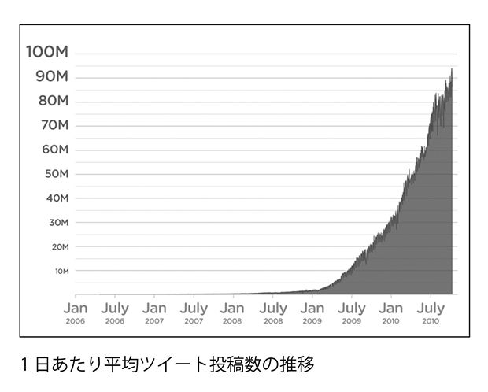
日本経済新聞朝刊の文字数は平均で約20万字になるそうだが（※８）、それを当てはめると、ツイッター上では約３秒で日経朝刊１日分の情報量が生まれているわけだ。
これは全世界を対象にした数字なので、日本国内だけに限定して考えてみると、２０１０年７月にセマイオキャスト社から「ツイートの18パーセントが日本からの投稿」という調査結果が発表されている（※９）。この数字で再び単純計算すると、日本から書き込まれる情報量は１秒当たり約１万４０００件、15秒ごとに日経朝刊１日分が生み出されていることになる。これだけの情報量が、小出しに、コンスタントに流れ込んでくるのである。
しかも当然ながら、その情報は昨日誰かが取材して、整理して持ち込んでくれたものではない。たった今誰かが書き込んだばかりの、断片的な情報であることも多いのだ。
さらに言えば、ツイッターだけがリアルタイムウェブではない。フェイスブックやグーグルバズなど、同様のサービスも加えれば膨大なリアルタイム情報がウェブ上に流入するようになっている。
リアルタイムウェブ系のサービスでは、画面上に表示される情報を「ストリーム（流れ）」と呼ぶことが多いが、まさしく洪水と呼べるような情報の流れが生まれていると言えるだろう。
マルチタスク脳の功罪
このように大量の情報が、コンスタントに流れ込んでくる状況をうまく活用するためには、何か作業をしながらも常に情報への関心を切らさない姿勢が求められるだろう。
いくら情報がリアルタイムでやってきても、１日１回だけチェックするという態度では意味がなくなってしまうからだ。例えばＰＣで作業をしつつ、モバイル端末の専用アプリで流れてくる情報に対応するといった、マルチタスクの実践である。
実際に人々がマルチタスクの傾向を強めていることは、体感的に感じている人が多いだろうが、各種調査からも明らかになっている。
例えばピュー・リサーチセンターが２０１０年に行ったアンケートでは、米国内の成人のうち、27パーセントに当たる人々が運転中にテキストメッセージを読んだり、送信したりしたことがあると回答している（※10）。
また少し古くなるが、同センターが２００４年に行った別の調査では、ＩＭユーザーのうち32パーセントの人々が、ＩＭ中には常に別のタスクを並行して行っていると回答している（この傾向は世代が若くなるほど高くなる）（※11）。
さらにニールセン社が発表した調査結果によると、２００９年第４四半期に米国内の消費者がテレビとインターネットを同時に利用している時間は、１カ月平均で約３・５時間。さらに「月に１回以上はテレビとインターネットを同時に利用する」と答えた人は約59パーセントで、２００８年の調査結果に比べて増加傾向にある（※12）。
このようなマルチタスクの環境に慣れてゆくと、人間の脳はどうなってしまうのだろうか。脳科学の分野で進められている研究によれば、人間の脳はマルチタスクに対応するために、それに適した行動パターンへと変貌を遂げるそうである。その行動パターンとは、当然ながら今自分が行っている行為だけを気にするのではなく、複数の行為に注意を向けるというものだ。
さらに膨大な量の情報によって刺激されることは、脳にとって一種の「快感」にあたるという指摘もある（逆に外部からの情報が極端に少ない環境に置かれると、人間は落ち着かなくなってしまう）。そしてその快感に慣れてしまうと、情報量が低下することを物足りなく感じるようになってしまうというのだ。
好みの問題もあるため一概には言えないが、テキストによる娯楽よりも、テレビやマンガなど映像系の娯楽の方が中毒性を指摘されるのはそのためだろう。オーディオやテレビをつけないと仕事ができない、という人も一種の「情報中毒」症状にあると言えるかもしれない。
問題は、マルチタスクによってＩＴ機器から流れ込む情報量が、テレビや映画といったメディアから得られるものとは比べ物にならないほど多いという点だ。したがってマルチタスクを続けていると、濃い味の食べ物ばかりを食べ続けた舌のように、脳は情報が「濃い」状態の方に満足を感じるようになってしまう。
脳科学者のノラ・ボルコフ博士はこの点について、「テクノロジーによって、私たちの脳の配線は組み替えられようとしている」と表現している（※13）。
想像に難くないが、この「マルチタスク脳」については、デメリットを指摘する人々が少なくない。そのデメリットとは、一つの作業に長時間集中することが難しくなってしまったり、今取り組んでいる作業とは無関係な情報をシャットアウトできなくなってしまったりするという点だ。
さらにこの傾向は、マルチタスク作業を終了させ、オフラインになった後も持続するという研究結果が出ている（まさしく脳の配線が組み替わってしまうわけだ）。
こうした悪影響が出てしまうのは、ある意味で当然のことだろう。「短い間隔で次々に新しい情報が入ってくる」という環境に対応するためには、とりあえず飛び込んでくる情報に反応するように、脳を準備しておかなければならない。
テクノロジーに関する考察から社会評論を行っているニコラス・カーも、最近の著書『ネット・バカ』（青土社）において同様の議論を展開し、現代の情報技術が持つマイナスの影響について警鐘を鳴らしている。
週刊ダイヤモンド誌に掲載されたインタビューでは、「インターネットをどのように活用するのがベストであるか分かっている大人でさえも、くだらない情報、重要でない情報であってもたくさんの新情報を探し続けられるということに、我を忘れてしまう。重要なことに注意を払わなくなってしまうのだ」と述べ、リアルタイムウェブで見られるような「新しいが断片的で、些末な情報」に触れることの危険性を指摘した（※14）。
ただしデメリットを指摘する人がいる一方で、人間の脳が上手に立ち回れるようになるのではないか、という楽観論を取る人も多い。
改めてドン・タプスコットにご登場を願おう。彼は前出の著書『デジタルネイティブが世界を変える』の中で、彼らが最新の情報テクノロジーを使うことについて次のように述べている。
私自身の子供たち、その友だち、そして、他の多くのネット世代を見る限り、彼らは私よりも作業の切り替えが速く、周囲の雑音を排除する能力にも長けているように見える。音楽を流したり、フェイスブックからニュースが送られたりしてくる中でも効率的に作業することができる。仕事に集中しながらソーシャルネットワークを使うこともできる。それが、落ち着いて仕事するために必要なようだ。ネット世代は情報過剰の世界で生きることに慣れており、手元の作業に集中しているときにはテレビなどの気をそらす要素をうまく遮断できていると、私は考えている（※15）。
また２００３年にハーバード大学とトロント大学が共同で行った研究によると、注意力散漫な人物の方が、逆に創造性が高いという結果が出ている。この研究では、各種のテストと実生活での業績をもとに被験者の創造性が判定され、それが高い人物ほど、外部からの刺激で不要だと考えられるものを無意識にシャットアウトする機能が弱い傾向が認められたそうである（※16）。
この特徴は、決められたタスクを全力で完成させなければならないような場合には短所となるに違いない。しかしこれまでに想像すらしなかったような、革新的なソリューションを考え出さなければならない場合には、一見無関係のように見える情報にも気を配ることが求められる。思考を掘り下げるか拡散させるかは、絶対的な尺度で優劣を付けられるものではなく、状況によってプラスとマイナスが決まるものなのだ。
普段からツイッターやフェイスブックを使っているという人は、少し思い出してみて欲しい。数年前まで、私たちはそこから流れ込んでくる大量の情報が存在しない世界で生活し、仕事をしていたのだ。あるいは携帯電話がなかったころと、現在を比較するのでもよい。よりリアルタイムで、より大量の情報を得ることのできるツールを手にしたからといって、人間がそれにのまれてしまうとは限らないだろう。
一時的な混乱の後で、新しいテクノロジーに合った生活や仕事のスタイルが登場してくる可能性や、それに慣れた人々が新たなイノベーションを生み出す可能性も大きいのではないだろうか。
こうして私たちは、ラーメン屋からでもネットに接続できるモバイル環境と、モバイル環境からでも容易に使用することができるウェブサービスを手に入れ、さらにささいなつぶやきが価値のあるコミュニケーションを生み出すことを理解し、また何かを食べながらでもメッセージを打ち込むことのできるマルチタスク脳まで手に入れた。「ラーメンなう」という一見バカバカしく思える書き込みの裏側には、こういった革新性が隠れているのである。
逆に「ラーメンなう」という発言が、従来のウェブで可能だったろうか。これまでもＰＣの前で食事をするという人はいたが、ごく少数派であった。レストランに通信機能付きのノートＰＣを持ち込み、食事しながらＰＣを扱うという人々になると、さらに少数派だろう。
したがって「ラーメンなう」というメッセージは、それがくだらないコンテンツだからこれまで存在しなかったわけではなく、ましてや人々がバカになったから生まれてきた言葉なのではない。それが生まれる条件がそろっていなかったにすぎないのだ。
いささか過剰な表現になってしまったが、決して「なう」は偶然流行したスラングではなく、２０００年代の終わりというタイミングで現れてきたことには大きな意味があると言えるだろう。
※１ ドン・タプスコット著、栗原潔訳『デジタルネイティブが世界を変える』
（翔泳社、２００９年）１３８～１３９ページ
※２ 'Teens, Privacy & Online Social Networks - How teens manage
their online identities and personal information in the age of
MySpace,' PEW INTERNET & AMERICAN LIFE PROJECT, 2007.
http://www.pewtrusts.org/uploadedFiles/wwwpewtrustsorg/Reports
/Society_and_the_Internet/PIP_Teens_Privacy_SNS_Report_Final.pdf
※３ ドン・タプスコット著、栗原潔訳『デジタルネイティブが世界を変える』
（翔泳社、２００９年）96～97ページ
※４ 「Ｔｗｉｔｔｅｒ（ツイッター）利用状況調査」（富士通総研）
http://jp.fujitsu.com/group/fri/report/cyber/research/twitter/
※５ 株式会社ＫＤＤＩ研究所 報道発表資料「『つぶやき』から投稿者のプロフィールを
自動推定する技術の開発に成功」より抜粋
http://www.kddilabs.jp/press/img/167_1.pdf
※６ http://twitter.com/#!/dankogai/status/17872318555
※７ 'Brave New World of Digital Intimacy,' NYTimes.com,
http://www.nytimes.com/2008/09/07/magazine/07awareness-t.html?pagewanted=2
※８ 「うんちく日経」（NIKKEI4946.com） http://www.nikkei4946.com/unchiku/unchiku.asp
※９ 'Asia first Twitter region - U.S. now only quarter of tweets,' Semiocast,
http://semiocast.com/pr/20100701/Asia_first_Twitter_region
※10 'Mobile Access 2010,' Pew Internet & American Life Project,
http://www.pewinternet.org/~/media//Files/Reports/2010/PIP_Mobile_Access_2010.pdf
※11 'How Americans Use Instant Messaging,' Pew Internet & American Life Project,
http://www.pewinternet.org/~/media//Files/Reports/2004/PIP_Instantmessage_Report.pdf.pdf
※12 「『ネットとテレビを同時に視聴』が急増：調査結果」（Wired Vision）
http://wiredvision.jp/news/201003/2010032620.html
※13 'Attached to Technology and Paying a Price,' New York Times,
http://www.nytimes.com/2010/06/07/technology/07brain.html
※14「ｉＰａｄ、グーグル、ツイッターでヒトは本当に馬鹿になりつつあるのか
〜米国の著名テクノロジー思想家ニコラス・カーが語る〝ネット脳〟の恐ろしさ」
（ダイヤモンド・オンライン）
http://diamond.jp/articles/-/9463
※15 ドン・タプスコット著、栗原潔訳『デジタルネイティブが世界を変える』
（翔泳社、２００９年）１６０ページ
※16 「『注意力散漫』とインターネットと創造性」（Wired Vision）
http://wiredvision.jp/news/201010/2010101823.html
第５章 リアルタイムウェブ時代のグーグル
ウェブと検索の補完関係
ウェブがここまで私たちの生活に浸透し、欠かせない存在となった理由とは何だろうか？
この問いに対する答えの一つは、当然ながら「生活に欠かせないコンテンツがウェブ上で公開されるようになったため」であろう。何をもって「生活に欠かせない」とするかは人それぞれだが、ある分野に関する深い知識を得るため、何かの作り方を知るため、あるいは単に楽しいビデオを見て嫌な気分を吹き飛ばすためと、とにかく必要なコンテンツが何でもそろっているのが現在のウェブである。
しかし価値のあるコンテンツがウェブ上で公開されていたとしても、そこまで到達できなければ何にもならない。そしてその道筋を与えてくれるのは、検索サービスという存在である。したがって冒頭の問いに対しては、「ウェブ上のコンテンツが充実し、さらに検索サービスが登場したため」と答えることも可能だろう。
仮に現在のような検索サービスがなければ、今必要としている情報を探し出すのが不可能とは言えないまでも、ずっと時間と労力を必要とする行為となっていたはずだ。途中でネット上を歩き回るのを止め、従来のメディアに帰っていく人はずっと多かっただろう。
そしてウェブサイトを訪問する人が少なければ、たとえ重要な情報を持っていたとしても、「どうせ誰も来ないだろうから」とウェブ上での発信をあきらめる人も多くなっていたはずである。
それではリアルタイムウェブの場合にも、そこが価値のある場所として認められるためには、リアルタイムウェブ版の検索サービスが必要なのだろうか。
またそれ以前の問題として、「リアルタイムウェブ版の検索サービス」は実現可能なのだろうか。さらに検索サービスによって今日の地位を手に入れたグーグルには、どのような影響が及ぶのだろうか。
この問題を考えるために、まずは検索エンジンの仕組みを確認しておこう。
検索エンジンのタイムラグ
グーグルをはじめとする一般的なロボット型検索エンジンでは、次のような仕組みでサービスが実現されている。まず「クローラー」や「スパイダー」などと呼ばれるプログラムがネット上をくまなく走り回り、ウェブサイトのコンテンツを収集する。
次に集めてきたコンテンツを分析・整理し、それに目次のようなしるし（インデックス）を付けておく。そしてユーザーから検索クエリが投げられると、用意しておいた「目次」を頼りにコンテンツを選び出し、最後にそれを一定のルールで並べてユーザーに返す。
これはごく単純化した説明だが、以上のような流れで検索エンジンは動いている。
このような仕組みの検索エンジンを使った場合に、あるユーザーがウェブ上に公開した情報が別のユーザーに検索されるまでには、どの程度の時間がかかるのだろうか。
まずコンテンツの作成者が、できたばかりのコンテンツ（文章や画像、動画など何でもいい）をアップロードする。それをクローラーが拾いに来てくれるのを待つわけだが、どのくらいの時間がかかるかはケースバイケースである。
クローラーは神様ではないので、広大なネット上のどこかで新しい情報が生まれたことを、瞬時に見出してくれるわけではない。あくまでも人海戦術（人ではないので機海戦術とでも呼ぶべきか）で、しらみつぶしに探し出すだけである。
あるウェブサイトが更新されたかどうか、どのくらいの間隔で見に来てくれるのかは検索エンジンのアルゴリズム次第だが、例えば「過去にそのサイトがどの程度の更新頻度だったか」といった情報が手がかりにされる。
つまり更新頻度が低ければ、それだけ新しい情報がある可能性も低いので、クローラーが訪問する間隔は長くなるわけだ。クローラーに訪問された一瞬後にコンテンツを更新したとしても、当然ながらそれを認識してもらうには、次の訪問タイミングを待たなければならない。
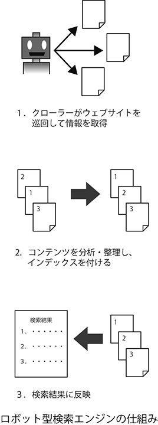
さて、コンテンツが公開されてからしばらくして、ようやくクローラーがやって来てくれたとしよう。クローラーがコンテンツを収集し、中身の解析が始まる。しかしこれで一安心というわけではない。検索者が入力してくるキーワードに対して、関連性の高い結果を返すために、各検索エンジンは独自のアルゴリズムによって、解析したコンテンツの評価を行うのである。
例えばグーグルの場合、有名な「ページランク」という指標が算出される。これは単純に言ってしまえば「そのページが他のページからリンクされている数（被リンク数）がどの程度あるか」に基づく評価で、リンクされていればいるほど他人からよく参照されている、つまり評価の高いページであると判断できるという考え方だ。
どんなアルゴリズムを採用するにせよ、ここまでの処理が行われて初めて、「検索してもらう」準備が整うわけだ。最後に実際の検索が行われ、インデックスに基づいて収集したデータの中から適切な情報がピックアップされ、検索者が求めているであろうと判断される情報を順に表示して終わりとなる。
これらの流れを見て分かるように、この仕組みの中ではタイムラグの発生を避けることができない。広大なネット上のどこであろうと、コンテンツが生まれた瞬間にそれを捕捉し、検索可能な状態に置くことは非常に難しい。
また仮に驚異的な速さでウェブ上を巡回するクローラーがあったとしても、被リンク数でコンテンツの評価を行っていた場合には、そのコンテンツが生まれてからある程度時間が経過しないと適切な評価を行うことができない。したがって通常の概念での検索サービスをリアルタイム化することは、事実上不可能なのである。
リアルタイム検索の登場
それではリアルタイムウェブには検索サービスが存在しないのかと言えば、そんなことはない。
幸いなことに、現時点で主要なリアルタイム系サービスは数が限られている。そこで検索の対象となるサイトを限定し、さらに評価方法（つまり検索結果を表示する順序）も「新しいものを上位に表示する（逆時系列順）」などのように割り切ってしまえば、リアルタイム検索を実現することは可能だ。こうして実現されたのが、第１章でも紹介したグーグルの「リアルタイム」検索機能である。
実はこの「リアルタイム」検索機能だが、現在は直接呼び出すこともできるようになっている。
２０１０年８月から、ずばり「グーグルリアルタイム検索」という名前で独立したスタートページが公開されているのだ（www.google.co.jp/realtime）。機能そのものは第１章で説明した内容と変わらないのだが、ウェブ検索の代名詞とも言えるグーグルがリアルタイム検索にも本腰を入れ始めたことは、リアルタイムウェブ時代の本格的な到来を象徴していると言えるだろう。
またマイクロソフトの検索エンジン「ビング」は、２００９年10月にツイッター検索サービスを追加した。
これは文字通りツイッターを検索対象にしたもので、グーグルのリアルタイム検索同様、結果は逆時系列順で表示される。２０１０年４月にはビング本体に統合されることが決定し、現在は「ビングソーシャル」としてフェイスブックも検索対象に含められている。
残念ながら現在は米国ユーザーのみの公開となっているが（ただしユーザー設定を変更することで日本からでも利用可能）、全言語のメッセージが対象となっており、実際に日本語でも検索が可能である。
スタートアップ企業によるリアルタイム検索サービスの提供も始まっている。
例えば２００９年６月に登場したコレクタは、ツイッターやフェイスブック、ユーストリームなどの主要なリアルタイム系サービスを対象に検索することが可能だ。それに加え、ブログやフリッカーなどのソーシャル系サービス、さらにブログのコメントまでも検索対象に含まれており、コレクタだけで比較的広範囲な検索ができることを特徴としている。
結果、表示画面はフレンドフィードの画面と同様、リアルタイムで更新されるようになっており、キーワードに合致する新しいコンテンツが投稿された場合には、画面上部に自動的に追加される。
また一部のコンテンツ（ツイートや画像など）は、コレクタの画面上で展開され、オリジナルのページにアクセスしなくても確認ができる。いちいちページ遷移せずにコンテンツが楽しめるという点で、リアルタイム検索の目的に合致したユーザーインターフェースと言えるだろう。
他にも「スクープラー（Scoopler）」や「トプシー（Topsy）」などといったリアルタイム検索サービスが登場しており、それぞれの哲学に基づいた機能やインターフェースを実現している。それだけに競争も激しくなっており、「ワンライオット（OneRiot）」など、リアルタイム検索エンジンの開発から撤退する企業まで既に現れているほどだ。
こうした動きを受けて、ツイッター自身もリアルタイム検索機能の改善に乗り出している。これまでツイッターの検索機能は、同社が２００８年に買収したサミーズ社の開発したエンジンを使っていたが、古い技術をベースにしていたため拡張性に乏しかった。
そこでオープンソースの全文検索エンジン「ルシーン（Lucene）」を採用した新エンジンを開発、パフォーマンスを向上させることに成功した。検索機能の充実はツイッター自体の価値を高めることに直結するだけに、ツイッター社としても継続して機能改善に取り組む可能性があるだろう。
世界第２位の検索サービス？
ここで一つ問題を出そう。世界で最も使われている検索サービスは何だろうか？ そう、当然ながらグーグルが提供している検索サービスである。
それでは、世界で２番目に使われている検索サービスは何だろうか？ ビングだろうか？ それともヤフー？
実は最近、意外なサイトがグーグルに続く検索サイトとして浮上している。お察しの通り、その答えはツイッターだ。
２０１０年10月、ツイッター社の公式ブログで驚くべきデータが公開された。ツイッターが１日当たりで処理する検索クエリ（ユーザーからの検索リクエスト）の数は、何と10億件以上に達するというのである（※１）。単純計算で１カ月間に約３００億件ということになり、これは最近のビングとヤフーの処理件数（順に41億件／月と94億件／月）を大きく上回る（※２）。
グーグルは１カ月当たり約８８０億件の検索クエリを処理していると言われており、さすがにこのボリュームには届かないが、ツイッターは堂々たる「世界第２位の検索サービス」と呼ぶことができるのだ。
---と威勢のよいことを書いてしまったが、実はこのデータには問題が指摘されている。
ツイッターはＡＰＩを公開しており、さまざまな操作を外部プログラムから行うことが可能だ。検索もその一つで、例えばクライアントアプリケーション（ツイッターを利用するための専用ソフト）で検索キーワードを設定しておくと、後は機械的に検索が実行されることになる。つまり１日10億件といっても、そのすべてが人間によって行われたものではないというわけだ。
ただし検索が自動で行われるからといって、その結果を人間が参照することには変わりない。また２０１０年４月にツイッター社から発表された公式情報によると、ツイッターに流れ込むトラフィックのうち、およそ75％が外部クライアントからのものとされている（※３）。
つまり公式ウェブサイトを経由しているのは全体の４分の１というわけだ。この比率を先ほどの検索クエリ件数に当てはめてみると、「人間が検索している可能性の高い回数」は１カ月に75億件程度、ビングとヤフーの中間ということになる。
この捉え方もさまざまな仮定に基づくものであり、計算と呼ぶには乱暴だが、少なくともツイッターの中で毎日無数の検索が行われていることは理解できるのではないだろうか。少なくとも検索サービスを提供する企業にとっては無視できないニーズであり、さまざまな形で「リアルタイム検索サービス」の構築が取り組まれているわけである。
「検索」概念の変化
このようにさまざまなプレーヤーが登場し、利用頻度も高まっているリアルタイム検索だが、各社が苦労しているのは検索結果をどのように表示するかという点だ。
検索結果の表示順を「逆時系列」などのように割り切ってしまった場合、どうしても検索者が求めているものとは異なる情報が表示されてしまうことは避けられない。
さらにリアルタイムウェブを狙ったスパムが既に登場しており、今話題となっているテーマを把握して、（それとはまったく関係ないにもかかわらず）関連する語句を含む宣伝メッセージを投稿するというケースが増えている。
こうしたスパムを結果表示画面から排除するという取り組みも行う必要があり、例えば前述のリアルタイム検索サービスのコレクタでは、収集したコンテンツのうち10パーセントしか表示結果に反映していないそうである（※４）。
残念ながらこの課題については、まだ有効な解決策は確立されていない。一部に「メッセージ中に頻出するＵＲＬがあった場合、そのＵＲＬを含む語句を上位に表示する」「リツイートされる回数の多いツイートを上位に表示する」といった対応を行うサービスも存在しているが、ページランクと同様にある程度コンテンツが蓄積されなければ結果が出てこないという点で、リアルタイム性と両立しているとは言えないだろう。
それでは現状のリアルタイム検索とは、入力されたキーワードに対してほとんど無駄な結果しか返ってこない、使い勝手の悪いツールなのだろうか？
仮にそうだとすれば、ごくわずかな人々しかリアルタイム検索サービスを利用しようとしないだろう。ところが現実には、さまざまな企業がリアルタイム検索の開発に力を入れており、ツイッターの検索機能のように大勢の利用者を持つサービスも登場している。
この矛盾について、「そもそもリアルタイム検索に求められているのは、従来のウェブ検索に求められるものとは異なるのではないか」という意見が出ている。
ネットとテレビ番組の関係をケースにして考えてみよう。テレビを見る人の数が減っていると言われるようになって久しいが、ソーシャルメディア上の会話を見ていると、テレビ番組の内容を基にしたディスカッションが行われていることが多い。
しかもリアルタイムウェブ上では、今放送中の番組についてコメントされることも珍しくないのである。第４章でも取り上げた、マルチタスクの実践だ。
例えばツイッターでも、人気テレビ番組の放映時間になると、関連語句がツイッター上で頻出キーワードとして検知されるというケースが珍しくない（日本だけでなく、米国の番組についても同様の傾向が見られる）。つまり「テレビを見ながら番組に対する感想やツッコミをツイートする」という行為が定着しているのである。
こうした状況においては、検索機能には何が求められているのだろうか？
一般的な検索エンジンの場合のように、「キーワードに対して関連性の高い結果を２〜３件手に入れる」というものである可能性は低いだろう。むしろ自分と同じ感想なら何件でも読みたくなるだろうし、異なる感想であっても「そういった見方もあるのか」という気付きを得られる。
それは特定の答えを探すための行為というより、不特定多数の意見、つまり雑談を得るための行為と言えるのではないだろうか。
考えてみれば、私たちはかつて「お茶の間」という空間において、家族や友人たちと会話しながらテレビを見るという行為を普通に行っていた。ツイッター上で発言しつつ、一方で検索しながらテレビを見るというのは、例えるなら「バーチャルなお茶の間」を出現させる行為だと言えるだろう。
その場合、結果は関連性によってソートされている必要はなく、直近に投稿されたメッセージが上位に表示されているだけで十分に目的を果たしてくれるわけだ。また「たった今番組内で起きた出来事に対する感想が聞きたい」という場合であれば、むしろ逆時系列順の方がニーズに合うことになる。
このように、リアルタイム検索サービスは「検索」という名前で呼ばれつつも、むしろＳＮＳのコミュニティやＢＢＳのスレッドのような情報の集合体を表示させることが目的で使用される場合がある。
したがって従来の「検索」というイメージに捕らわれず、それがどのような使われ方をされているのか改めてよく観察してみる必要があるだろう。
キーワード＋アルファによるリアルタイム検索
もう一つ、検索という行為が従来のイメージとは異なりつつある例を示そう。
２０１０年９月、ケーブルテレビネットワーク「ディスカバリーチャンネル」を運営するディスカバリーコミュニケーションズの本社ビルに、拳銃と爆発物を持った男が侵入し、人質を取って立てこもるという事件が起きた。
この際、たまたまビルの中にいた社員らがツイートを投稿し、現場からの情報をツイッター上で伝えるという状況が生まれている。
最近ではリアルタイム系サービスを利用して、現場から実況や生中継が行われるということは珍しくなくなったが、この状況を知った南カリフォルニア大学助教授のロバート・ヘルナンデスは、事件の情報を集めようとするジャーナリストたちに対して次のような助言を行った。
ディスカバリーチャンネルのジャーナリストたちへ。フォースクエア上でディスカバリーチャンネルの場所（venue）にチェックインし、他に最近チェックインした人を確認しよう。情報源になるはずだ（※５）。
フォースクエアは第３章でも紹介したように、位置情報系サービスの一つだ。モバイル端末から自分の居場所を登録し、その位置情報を通じてさまざまなコミュニケーションを楽しむことができるというものだ。
当然ながらここでは通常の使い方ではなく、実際に事件現場付近にいる人を確認する、あるいは自分が現場にいることを示してもらうために活用したわけである。
またフォースクエアはツイッターとも連動しているので、ユーザーが設定さえしていれば、すぐにそのユーザーのツイートを確認することもできる。つまりフォースクエアという関連サービスと同時に用いることで、ツイッター上の情報をより活用しやすくしようとしたわけだ。
同じような発想は、２００９年11月に米テキサス州フォートフッド陸軍基地で起きた銃乱射事件の際にも見られた。この事件でも現場となった基地内からツイートを投稿した関係者が多数存在したのだが、外部の野次馬もツイッター上で盛んに発言していたために、単に基地名や銃といったキーワードで検索すると現場にいないユーザーの発言までが抽出されてしまっていたのである。
この時点では、ツイッター上での公式な位置情報サポートは始まっていなかったのだが、ニューヨークタイムズ紙は次のように指摘している。
位置情報機能は開発者にのみ公開されているが、現時点でも位置情報を検索条件に加えることは可能である。ツイッターユーザーが登録時に入力した、プロフィール欄の位置情報を参照しているのだ。
この単純なフィルターを使うだけでも、フォートフッド銃乱射事件に関するツイートの検索に違いをもたらすことができる。検索結果をテキサス州キリーン（陸軍基地の近くにある町）から15マイル以内に限定すれば、兵士たちが投稿したメッセージを簡単に見つけられるだろう。彼らは封鎖された基地の内部がどんな状態かを語ったり、子供たちを心配したりしている（※６）。
ちなみに現在のツイッターでは、ツイート単位で位置情報を設定することが可能だ。実際に先ほどのヘルナンデス助教授も、リアルタイム検索を行う際に位置を条件に入れ、現場から書き込まれたツイートのみを抽出するという行為を併せて行っている。
このようにキーワードのみで検索するのではなく、他の情報や関連サービスも組み合わせることで、リアルタイム検索をより有益なものにする工夫が行われるようになっているのだ。
こうして考えてみると、むしろたった一つの検索エンジンやアルゴリズムに情報の信頼性を任せてしまうのではなく、多角的な検索を行う方が常識になる可能性もあるのではないだろうか。
いずれにしても、リアルタイム時代における「検索」という行為は、私たちが今知っている行為からは大きく異なるものになる可能性があるだろう。もちろん従来型の検索サービスに近いものを追求する動きは続けられるだろうが、それが達成されていないからといって、リアルタイムウェブの中ではユーザーが欲する情報を探し当てることはできないとは限らないのである。
ソーシャルフィルタリングの登場
さらに極端な話をしよう。リアルタイムウェブにおいては、検索自体が行われなくなるかもしれない。それに代わって登場するのが、「ソーシャルフィルタリング」という仕組みである。
ソーシャルフィルタリングという単語を初めて聞いた、という方は多いかもしれないが、決して新しい概念ではない。例えば今友人の地元を訪ねていて、二人で食事に出かけることになったとしよう。どこか良い店を探すのに、情報誌やガイドブックを持ってきて調べようとするだろうか。その前に、あなたは友人に向かってこう言うはずだ。「この辺で美味しいお店はどこ？」
ガイドブックを制作しているのは情報収集のプロであり、そこには信頼のおける情報が含まれているだろう。目次から目当ての情報を「検索」し、ページをめくるという手間はあるものの、確実に目当ての情報が見つかるに違いない。しかしガイドブックを使おうとせず、友人から情報を得ようとするのは、そこに別の判断が存在しているからである。
このケースでは、あなたは今いる場所が友人の地元であり、相手に土地勘があることを知っている。さらに友人が自分の好みを理解していて、その上で良い店を紹介してくれることを期待できるかもしれない。
また先ほど「ガイドブックは信頼が置ける」と書いたが、中には「著者がひいきの店を紹介しているだけかもしれない」というような疑いを持つ人もいるだろう。しかし自分の友人ならば、事実を歪めることなく、あなたのために良いお店を選んでくれるはず---これがソーシャルフィルタリングである。
日本語には「目利き」や「事情通」という言葉があるが、ちょうどその発想に近いだろう。信頼の置ける人物に情報の取捨選択を任せようというのが、ソーシャルフィルタリングの基本的な概念である。
似た概念に「コラボレイティブフィルタリング」があるが、こちらはＥＣサイトのレコメンデーション（お勧め）のように、過去に蓄積されたユーザーの行動データの中から、特定のユーザーが気に入る可能性の高い情報を割り出すという仕組みである点が違う。
そのような「群衆」から自動的に結果を出すのではなく、ユーザー自身が自分とつながりのある「個人」に目利きを依頼するという点が、ソーシャルフィルタリングの特徴だ。
ソーシャルフィルタリングでは、情報の取捨選択を「誰からもたらされた情報か」という条件で行うため、ページランクのようなタイムラグが発生しない。したがってリアルタイムウェブにとって、非常に都合のよい仕組みと言えるだろう。もちろんソーシャルフィルタリングを機能させるためには、その前に「ソーシャル」の部分、すなわち信頼できる人物の選定を行っておく必要がある。
しかし第１章で解説したように、ウェブ上ではソーシャルメディアが定着しつつあり、既に存在しているソーシャル性を活用することが期待できる。そしてひとたびソーシャル性を確立してしまえば、あとは知るべきニュースの方が、自分から飛び込んできてくれるのだ。
この点について、前出の『ロングテール』『フリー』の著者クリス・アンダーソンは、独シュピーゲル紙のインタビューに答えて「いまや大切なニュースはツイッターやＲＳＳ、メール、そして会話からやってくるようになった」と述べた上で、次のように指摘している。
主流メディアの記事は数多く読むが、自分から直接読みに行くことはない。記事の方からやってくる、というのが最近ではごく当たり前のことになっている。より多くの人々が、主流メディアというプロの目によるフィルターではなく、ソーシャルフィルターを通してニュースを選ぶようになってきている（※７）。
ツイッターにおけるソーシャルフィルタリング
元ライブドアの堀江貴文は、週刊ダイヤモンド２０１０年１月23日号に掲載された対談において、「新聞を読まなくてもツイッターで世の中の動きが分かる」と語っている。
ネット上ではこの意見に賛同する声が多く書き込まれ、ネットユーザーに根強い反マスコミ感情を割り引いても、ツイッターへの信頼感が高いことを示す結果となった。この際、「新聞がいらない」理由として彼が指摘していたのが、「ツイッターではソーシャルフィルタリングが機能している」という点であった。
ツイッターでは「フォロー」という機能によって情報の流れがコントロールされる。通常の画面に表示されるツイートは、基本的に自分がフォローしている相手が投稿したものだけであり、フォローしていないユーザーのツイートはこちらから見に行かない限り表示されない。そして誰をフォローするか、あるいはフォローを外すかは、ユーザーの手に委ねられている。
したがって、自分が欲しい情報を発信してくれる人々だけに自分の注意を向けることが可能であり、関心のない情報、あるいは宣伝メッセージや信憑性の薄いゴシップばかりを発信するユーザーは視界から消すことができるわけである。
２００８年５月12日、中国の四川省で大地震が発生した際、ツイッターはいち早く情報を伝え、その情報伝達スピードを世界に示すこととなった。
このケースでは、まだ揺れが続いているうちに現地からの第一報がツイッター上に流れ始め、ＣＮＮなどの大手メディア、さらにはＵＳＧＳ（地質調査所）などの公的機関よりも先にツイッターで地震発生を知ったという人が少なくない。現地からの写真がネットに流れたのも、ツイッターが最初であったという説まである。
速報性という点でツイッターに「負けた」形となった米地質調査所の関係者は、この件について次のようにコメントしている。
しかし、Search Engine Landというブログを開設しているダニー・サリバン（Danny Sullivan）氏は冷静だ。「地質調査所は世界各地の地震計の観測結果を専門の科学者が検討した後で公表している。Twitterが地質調査所に地震が起きたと知らせてあげた、といわんばかりの書き込みもあるが、さすがにそれは無茶だ」（※８）
つまり地質調査所という公的な機関である以上、客観的な裏付けをしないうちに情報を出すわけにはいかないという姿勢である。
一方のツイッターではどうだったのだろうか。四川大地震のニュースをツイッター上で広める上で、キープレーヤーの一人となったのが著名ブロガーのロバート・スコーブル氏である。彼は中国にいる知人（dtanというアカウント）から速報を受けると、間髪入れずに次のようなツイートを投稿した。
たった今、@dtanが北京で地震があったと伝えた。どのくらいの大きさだろうか？ 地質研究所のサイトを確認しないと（※９）。
両者の発言は、公的機関による情報発信と、ツイッター上での情報の伝わり方の本質的な違いを示すものと言えるだろう。
伝聞の形を取っているものの、スコーブルは地震発生を疑っていない。彼は知人が中国にいることを知っており、さらに彼をフォローしてその発言をチェックしている時点で、dtanの情報を信頼しているわけである。その結果が、情報を受け取ると同時に自らも発信するという行動だった。
そして彼がこの情報を取り上げたことにより、地震のニュースは彼をフォローしているユーザーの間に一気に拡散することになる。言うなれば、ロバート・スコーブルという「フィルター」を通っていること自体が、中国で地震が起きたらしいという情報に一層の信頼性を与えているわけである。恐らく彼の発言を読んで、同じように即座に彼の発言をリツイート（引用して投稿すること）したユーザーも多かったはずだ。
実際、他のツイッターユーザーの発言を引用するリツイートの92パーセントは、オリジナルの投稿があってから１時間以内に発生しているという調査結果が出ている（※10）。
ツイッター上の「伝言ゲーム」がいかに即座に行われているか、すなわち情報の発信者を信じて情報の授受が行われているかを示すものだろう。ただしその反面、いわゆる「デマ」が拡散しやすくなっていると指摘する意見も多い。
ストック ＶＳ フロー
このように、ソーシャルフィルタリングという新たな情報選択の仕組みが登場することで、検索エンジンの相対的な必要性が低下する可能性がある。
ただソーシャルフィルタリングがなかったとしても、そもそも情報がプッシュ型で配信されてくるリアルタイムウェブにおいては、情報は「フロー（流れ）」として処理されるため、情報が「ストック（保管）」されていることを前提とする検索エンジンは相性の悪い存在なのである。
この点について、もう少し詳しく解説してみたい。まず「ストック型」と「フロー型」という言葉について、新聞に例えて説明してみよう。
新聞を自宅で購読する状況を思い浮かべて欲しい。朝になると、家のポストには朝刊が届けられている（リアルタイムではないが「プッシュ型」の情報配信だ）。
あなたは自宅で朝食を食べながら、あるいは通勤電車で揺られながら、新聞紙を広げる。そして隅から隅までくまなく熟読する---ことはせず、会社が始まる前の限られた時間の中で、ざっと目を通すだけということが多いだろう。
そして一度目を通した新聞紙はその辺に積んでおき、古紙回収日までそのまま、という流れになるのではないだろうか（もちろん「新聞はじっくり時間をかけて熟読する」という方も少なくないだろうが）。
このケースでは、大量の情報が目の前に流れてきて、あなたはその一部を消化し残りは流れ去って行く。これが「フロー型」の情報処理である。
実は朝刊を定期購読で読むという行為は、情報が手元に届くまでのタイムラグに雲泥の差があるものの、リアルタイムウェブの概念に近い。
ところが何気なく読んでいた朝刊の中に、気になる特集が見つかったとしたらどうするだろうか？ 古紙回収に回されてしまわないように、あなたはその部分を切り取っておき、後で読み返すはずだ。
しかもその特集に、「第３回」と記されていたら？ 家の片隅に積まれていた新聞紙の山に向かい、過去の特集部分を探し出そうとするのではないだろうか。あるいはその特集のテーマに関する本を、書店や図書館で入手して読もうとするかもしれない。
このケースでは、情報は流れ去らず、一箇所に保管される。あるいは保管されている情報にあなたの方からアクセスし、集めた情報を消費することになる。これが「ストック型」の情報処理だ。
「フロー化」の必然性
ここで従来のウェブをどう利用していたかについて、改めて振り返ってみよう。
あなたが使うウェブブラウザには、既にいくつかのサイトが「お気に入り」に登録されていて、定期的にアクセスしているかもしれない。
例えばニュースサイトなどはその典型だろう。更新が高い頻度で発生し、かつ自分が興味を抱くテーマの記事が掲載されている確率が高いサイト。そのようなサイトに対しては、自ら出向いて行く「プル型」で情報を拾うという行動を取ってもおかしくない。
しかしインターネット全体から見れば、そのようなウェブサイトは少数派だ。大多数のサイトはほとんど更新されず、更新されたとしても不定期であり、いつ新しい情報が掲載されるのかは分からない。それはまるで、うずたかく積み上げられた古新聞の束のようなものだ。それを片端から見てゆくというのは現実的ではない。
したがって、従来のウェブ上にある情報の大部分は、必然的にストック型で処理されることになる。
ユーザーは「このテーマに関する情報が欲しい」という明確な意思を持ち、ストックされた情報の中から必要なものを取り出して消費する。そこで検索エンジンという、大量の「古新聞の山」の中から目指す情報を引っ張り出すツールが、これまでのウェブにおいて非常に重要な存在になっていたわけだ。
それでは、プッシュ型の情報配信が一般化された状況ではどうなるだろうか。その場合、ユーザーの手元にはどんどん新しい情報が届けられることになる。
それはちょうど、新聞の配達を一時停止してもらうお願いをし忘れたまま、長い旅行に出かけてしまうようなものだ。旅行から戻ったあなたが最初に目にするのは---新聞紙で溢れた郵便受けである。あなたは図らずも「ストック」された新聞紙の山を見て、そのすべてに目を通そうと思うだろうか？
さらに悪いことに、プッシュ型で手元に届いた情報の中から、あなたが求める情報を探し出してくれる検索エンジンは存在しない。
デスクトップ検索エンジン（ローカルＰＣ上の検索を可能にするツール）は進化しつつあるものの、一般的なウェブ検索エンジンで行われているように、外部での評価（ネット上でのリンク数や閲覧回数など）を加味して情報が並べ替わるようにするということは実現が難しい。
また使うかどうかも分からない、大量の情報をローカルＰＣ上に保存しておくというのも非現実的である。
したがってプッシュ型で配信される情報を扱うには、受け取った情報を「フロー」として処理せざるを得なくなるのである。特に「山手線」など、多くの人々が関心を持ち、情報発信しているテーマを扱うときにはなおさらだ。
実際、ツイッターをはじめとしたリアルタイムウェブ系のサービスでは、コンテンツが表示される画面に「ストリーム（流れ）」などといった名前が付けられ、フローを連想させることが多い。
なぜＲＳＳリーダーは普及しなかったのか？
ここで少し昔話をしよう。昔と言っても数年前のことだが、２００５年から２００７年にかけて、前述のＲＳＳリーダーが話題になったことがあった。
ＲＳＳリーダーは情報収集を効率化するものであり、それだけに「ビジネスマン必携ツール」として社会に広く普及することが予測されたのである。実際に非常に便利なツールなのだが、残念なことに期待されていた程には一般に定着せず、ツイッターなどのソーシャルメディアが勢力を増す中で、それと入れ替わるように下火になってしまった。
なぜＲＳＳリーダーは期待された成功を収められなかったのだろうか。これには諸説あるのだが、その中に面白い指摘がある。それは、「未読記事の山」が見えてしまうというものだ。
ＲＳＳリーダーが集めたＲＳＳファイルの情報は、アプリケーションの中に格納され、その格納庫の中にある情報をユーザーは閲覧することになる。ちょうどメールクライアントを使うかのような感覚だ。
そして未読の記事は「未読メール」と同様に件数で表示されることが多く、後どのくらい「読むべき記事」が残っているのか一目で分かるようになる（当然ながらオリジナルのサイトを読みに行っているのであれば、未読が何件あるかはすぐには分からないわけだ）。
この未読件数がくせ者で、ユーザーに対して心理的なプレッシャーを与えてしまい、逆に読むことを避けるようになるというのだ。ＲＳＳリーダーに登録されているブログの数が少ないうちは、まだ心理的なストレスは小さい。
しかしブログの数が増え、ＲＳＳリーダーに未読記事がうずたかく積み上がったらどうなるか。しかもＲＳＳリーダーに登録されているのは、多かれ少なかれ「これは欠かさず読まなければ」と感じたブログだ。スパムメールでメールクライアントが膨れあがるのとは、まったく質の違うプレッシャーを感じることだろう。
さらに積み上げられた記事の中身について、詳細な条件を付けて検索することは難しい。まるで古新聞の山と格闘するかのように、その中から自分にとって価値のあるコンテンツを見つけ出さなければならないのである。
つまりいくらＲＳＳリーダーが「情報を集める」という部分をフロー化し、効率化してくれるからといって、集まった情報を「ストック」として処理しようとすれば無理が生じてしまうわけだ。したがってプッシュ型の情報配信には、フロー型の情報処理が組み合わされる方が望ましいのである。
面白いことに、ツイッターをＲＳＳリーダー代わりに使っていると発言している人は多い。前述のように、ツイッター経由でも重要なニュースが手に入れられるようになり、それを確認していれば事足りるようになったことが直接的な理由と言える。
その一方でＲＳＳリーダーにはなかった「フロー性」があることにも注意する必要があるだろう。
リアルタイム時代に求められる「グーグル」とは
このように、リアルタイムウェブという新しい環境の下においては、情報の流れ方もまた新しいものとなる可能性が高い。その中ではソーシャル性が大きな力を発揮し、従来の「ストック型」と合わせて、フロー型で情報を処理することが増えてくるようになるだろう。
ところが第１章でも解説したように、グーグルはこの「ソーシャル性」という面において、成功しているとは言い難い。その一方でフェイスブックやツイッターなど、ソーシャルメディアとリアルタイムウェブをうまく組み合わせ、一定の立場を確立することに成功したサイトが存在している。
グーグルも「グーグルバズ」などのサービスで対抗しているものの、彼らの勢力を覆せるかどうかは五分五分といったところだろう。
したがってリアルタイムウェブの時代には、ソーシャルメディア系のサイトが現在のグーグルと同じような立場にまで成長することが予想される。もちろん既存の検索サービスの価値がなくなることはないだろう。
グーグルの検索は、マイクロソフトの「オフィス」アプリケーション群が消え去らなかったように、今後も一定の力を持ち続けることが考えられる。しかしそれが広大なネットの世界を案内してくれる、唯一のガイドではなくなるのだ。
さらに今後は、モバイル経由のコンテンツや各種機器類のデータなど、これまでの「ウェブ」のイメージとは大きく異なる情報が増加してくることが考えられる。そのときに必要となるのは、一回の検索で満足するのではなく、いくつかの異なる情報を組み合わせて全体を把握しようとする姿勢だ。
恐らく次の10年が終わるころには、新しい種類の情報をまとめて「検索」して回答を引き出してくれるツールも進化しているだろうが、しばらくはユーザー自身の工夫が必要になるだろう。
そしてそういった工夫ができる人物、各種情報のハブとなる人物が重宝され、「ソーシャル」の中で一定の地位を保つようになるかもしれない。そして「ハブ」的な人々が集まっているようなサービス、あるい「ハブ」との関係が保ちやすいサービスが人気を博す、という状況も生まれてくるだろう。
グーグル後の「グーグル」はツイッターかフェイスブックで決まりだ、という人も少なくない。確かに両サービスは多くのユーザーを集め、その価値も強く認識されているが、個人的にはまだまださまざまなアイデアが試されている時期のように感じている。
位置情報系サービスやスマートフォンの活用など、これからさらに発展する可能性のある分野は数多い。そしてそこには、日本企業が活躍する余地も残されているだろう。
第４章でも述べたように、日本社会と企業はリアルタイム性において先行しており、既に多くの知見が蓄積されている。日本発の革新的なサービスが世界を席巻する、という可能性に期待を込め、「まだ勝負はついていない」と予想しておきたい。
※１ 'Twitter's New Search Architecture,' The Twitter Engineering Blog,
http://engineering.twitter.com/2010/10/twitters-new-search-architecture.html
※２ 'Twitter Hits 1 Billion Queries Per Day, Announces New Search Tech,
' Search Engine Land,
http://searchengineland.com/twitter-hits-1-billion
-queries-per-day-announces-new-search-tech-52417
※３ 'Live From Chirp: Twitter's Platform Roadmap,' TechCrunch,
http://techcrunch.com/2010/04/14/live-from-chirp-twitters-platform-roadmap/
※４ 'The Real-Time Web and its Future,' ReadWriteWeb, p.70.
※５ Robert Hernandez, 'Real-time Web + journalism = Real-time reporting,
'The Online Journalism Review, （筆者訳）
http://www.ojr.org/ojr/people/webjournalist/201009/1887/
※６ 'Refining the Twitter Explosion,' New York Times, （筆者訳）
http://www.nytimes.com/2009/11/09/business/09link.html
※７ 'Maybe Media Will Be a Hobby Rather than a Job,' Spiegel Online, （筆者訳）
http://www.spiegel.de/international/zeitgeist/0,1518,638172,00.html
※８ 「人気サイト『Ｔｗｉｔｔｅｒ』、マスコミより早く地震を伝える」
（AFP BBNews、２００８年５月14日）
http://www.afpbb.com/article/disaster-accidents-crime/disaster/2390989/2925928
※９ http://twitter.com/Scobleizer/statuses/809121152 （筆者訳）
※10 'The Short Lifespan of a Tweet: Retweets Only Happen Within the First Hour,' ReadWriteWeb,
http://www.readwriteweb.com/archives/the_short_lifespan_of_a_tweet_retweets_only_happen.php
第６章 リアルタイムウェブと社会の未来
２００１年のグーグル検索
「グーグルの10年」の始まりとなった２００１年。そのころのウェブはどのような姿であり、またそこに映し出されていた社会の姿はどのようなものだったのだろうか？
今でも10年前を新鮮に思い出せる、という方もいるだろうが、多くの方々はとっくに忘れてしまっているはずだ。しかもそのころからウェブサイトをフル活用していたという人は少数派だろう。
実は２００８年10月のこと。グーグルが創業10周年の記念として、２００１年１月当時のグーグルのトップページ（当然ながら検索サービスのものだ）と、当時の検索結果のキャッシュを公開した。通常のように検索を実行することもでき、キャッシュに残されたデータの範囲内で、当時のままのウェブサイトを確認することも可能だった。
残念ながらあくまでも「10周年のお祭り」として公開されたもののため、現在このサイトは閉鎖されてしまっているのだが、今でも使用レポートをニュースサイトなどで閲覧することができる。
その中の一つ、ＩＴメディアの記事（※１）によると、「グーグル」で検索した場合のヒット件数は７７１件。現時点（２０１０年11月）では約１０３０万件ヒットするので、10年間で１万３０００倍以上になったことになる。
もちろん２００１年当時のグーグルは今のように強力な存在ではないため、ウェブ上で言及される数も少なかったわけだが、いかにウェブが膨張し、またその上で活躍する企業の顔ぶれが大きく変化したかを感じることができるだろう。
さらにこの「２００１年のグーグル検索」を使ってみた感想として、当時多かったコメントの一つが、「（当然ヒットすると思っていた物事が）それほどヒットしない」というものだった。
これは10年前のグーグル検索の性能によるところもあるだろうが、もっと大きな要因は、今日のようにウェブ上に情報を公開する手段も多くなければ、それに携わる人々の数も少なかったという事情があるだろう。ウェブとは現実のごくごく一部を反映したものにすぎなかったのだ。
それでは今から10年後。２０２０年を迎えたとき、リアルタイム化の進行したウェブは、いったいどのような姿になっているのだろうか。そしてウェブと社会の関係は、どのようなものになっているのだろうか。
重なり合うウェブと現実
メディアが持つ役割の一つは、社会を映す鏡として機能することだ。紀元前の洞窟壁画から、現代のテレビ中継に至るまで、人々はそこに現実の世界を投影しようとしてきた。そして単に投影するだけでなく、目の前にある現実を即座に映し出せるよう、活版印刷や無線通信技術といった情報伝達速度を向上させる仕組みの開発に力を注いできたわけである。
しかしこれまでのメディアでは、どうしても現実という「光」がメディアの表面に到達するまで、一定の時間が必要だった。例えば新聞には記者が記事を書くための時間が、テレビの生中継には取材班が現場に到着するための時間が、またブログですら記事を練り上げてデジカメで撮影した画像をアップロードする時間がかかってしまう。
いくら「反射」の速度、つまり得られた情報を拡散するスピードを上げたとしても、情報が生まれてから広く伝わるまでにタイムラグが発生してしまうことは避けられなかった。
だがリアルタイムウェブは、ウェブ技術とモバイル技術を組み合わせることで、文字通り「リアルタイム」で社会を映し出す史上初のメディアになろうとしている。そこでは無数の一般人が情報収集に参加しており、しかも従来のメディアには決して現れることのなかった、ごくささいな行動や感情の揺れまでも吐露されている。
さらに今後、ありとあらゆるデバイスがネットワークに参加し、彼ら自身や周囲に関する情報をリアルタイムでアップロードするようになることが予想されている。つまりウェブの上にあるバーチャルな世界と、現実空間上のリアルな世界とが、ほぼ重なり合うような状況が生まれつつあるのだ。
そのような状況が到来すれば、現実の世界を見るのではなく、ウェブの中に再現された世界を分析することで、現実を把握することが可能になるだろう。ウェブ２・０が登場してからしばらくして、「ウェブ上にあるブログを分析し、特定の商品やブランドに対する『世論』の傾向を把握する」というサービスが話題を集めたが、それと同じことをより広範囲に、しかも深い形で実行できるようになるはずだ。そしてこの予想は、既に現実のものとなりつつある。
リアルタイムウェブから社会を分析する
２００６年９月から２００９年８月まで、実に３年間かけてツイッター上の発言を収集し、その中に込められた感情を分析するというプロジェクトが米国で実施された。プロジェクトの名称は「パルス・オブ・ザ・ネイション（Pulse of the Nation）」（※２）。直訳すれば「我が国（米国）の鼓動」という意味になるが、この一風変わった名前が付けられた背景にはあるエピソードがあった。
２００９年のこと、ツイッター社がクラウドサービス「グーグルアップス」に保管していた社内文書が流出するという事件が起きた。その際に公になった経営資料の中に、「10億のユーザーがいれば、ツイッターは地球の鼓動（pulse of the planet）そのものになる」という一節が書かれていた（※３）。
これまで「なう」という言葉の解説を通して明らかにしてきたように、ツイッターのユーザーはその瞬間の思いをツイートに込め、リアルタイムで発信している。したがってユーザー数さえ十分あれば、ツイッターというサービスは社会全体を反映したものとなるという見立てである。
「パルス・オブ・ザ・ネイション」という名前は、このツイッター経営陣の思いにちなんで付けられたものだった。それでは同プロジェクトによって、どのような「鼓動」が聞こえたのか。
プロジェクトが３年間で集めたツイートの数は３億件。この膨大なデータの中から感情に関する表現を抽出して、幸せな感情がどの時間帯に高まるのか、どの地域で高いのかなどが探られた。
その結果、ウィークデーの昼間（つまり多くの人々が仕事している時間帯）は幸福感を感じる人が減るという分かりやすい傾向が出た一方で、地域については「西高東低」、つまり西海岸の人々の方が幸福感を感じているという傾向が見られたそうである。
これは単純に「社会全体としての感情」を把握するだけのプロジェクトだったが、より具体的な現象を予測するための研究も行われている。
例えば２０１０年には、ＨＰのパロアルト研究所に勤める研究者らから、ツイートを分析することで映画の興行売上を予測するという研究結果が発表された。
このプロジェクトは米国内を対象に、３カ月かけて２８９万件分のツイートを抽出し、その中に登場する24本の映画の興行売上との関連を調査。その結果、ツイートの傾向を分析する方が、映画業界における興行売上の予想を行っている予測市場（※４）サービス「ハリウッド証券取引所（Hollywood Stock Exchange、ＨＳＸ）」よりも正確に、将来の売上を予測できることが確認されたそうである（※５）。
またインディアナ大学の研究者らは、ツイートを株式市場の変動予測に役立てるという研究を発表している。この研究では、先ほどの「我が国の鼓動」プロジェクトと同様、ツイートに込められた感情を分析（集められたデータは、２００８年２月から12月までの間に投稿された約９８０万件のツイート）。その結果、「平穏」の感情を示す指標が、３〜４日後のダウ・ジョーンズ工業株価平均の変動と連動していることが確認された（※６）。
こうした「感情分析」にはまだまだ研究が必要な余地が残されているが、企業活動から公共政策まで、応用範囲は広いだろう。また「気持ちが悪い」「セキが出る」などのような発言を捕捉することで、伝染病などの発生を早期に把握するといった公衆衛生の分野でも活用可能なはずだ。
実際にエスエス製薬から、ツイートからカゼの地域別の流行状況を分析するというサービス「カゼミル」が発表されている。「リアルタイムウェブによれば、現在東京都内でインフルエンザの流行が確認される」などといった警報が流れるという可能性も、まったくのゼロとは言えないだろう。
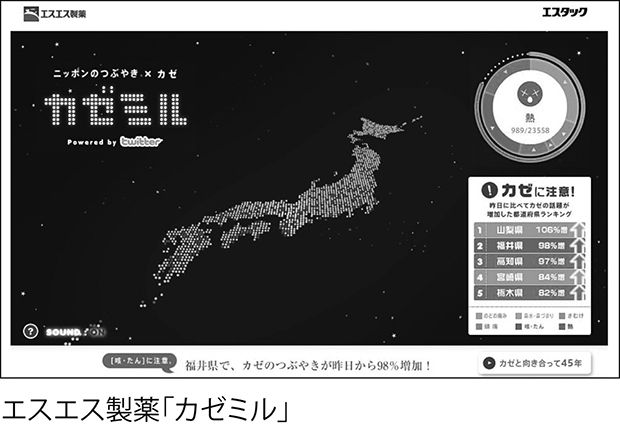
マーケティングへの活用
もちろん公共政策に反映されるほどの大がかりな仕掛けが実現されるには時間がかかるだろうが、企業やＮＰＯなどといった比較的小規模な組織において、自らが活動する領域のリアルタイム状況を把握するためにウェブに目を向ける、という取り組みが先行して行われるのではないだろうか。
例えばエンターテインメント企業としてお馴染みのワーナー・ブラザーズは、マーケティング活動をサポートするツールとしてリアルタイムウェブを役立てている。
ワーナー・ブラザーズでは社内向けに、特殊なダッシュボードシステム（画面上でさまざまなデータを閲覧できるツール）を構築した。このダッシュボード上では、同社に所属するアーティストの個別ページにどの程度のアクセスが来ているかをリアルタイムで把握することができる。
さらにそのアクセスが何から生じているのか（ブログの特定エントリなのか、はたまたツイッター上でのクチコミなのかなど）を確認することもでき、もし炎上によってアクセスが急増しているのであれば、それに対して適切な措置を取ることが可能になる。
このシステムで把握されているのは、関連ウェブサイトへのアクセスだけではない。ＥＣサイトでの売上や、寄せられたコメントなどといったものまで分析の対象となっている。したがってクチコミという形で現れていなかったとしても、さまざまな角度から今現れつつある「動き」をリアルタイムで分析できるようになっている。
ワーナー・ブラザーズの担当者は、次のような具体例を紹介している。
例えばある日のことです。普段はあまりアクセスのないアーティスト公式サイトに、突然７０００人もの訪問者がやってきていることに気付きました。そこでツイッターを検索し、さらにWeSmirch.com（セレブのゴシップニュースを集めるサイト）をチェックしてみたところ、そのアーティストに子供ができていたことが分かったのです。そんなこと、誰も教えてくれていませんでした！ 私たちは急遽、サイト上で販売されていた商品を変え、ベビー用品が贈れるようにしました。さらに生まれてくるのが男の子か女の子かの投票ができるようにもしました。その瞬間にサイトに流れ込んできていたトラフィックを、フルに活用したわけです（※７）。
同様にリアルタイムデータを企業の行動に反映しているのが、ソーシャルゲームサイトの「ジンガ（Zynga）」だ。ジンガはサイトに訪れるユーザーの行動をリアルタイムに解析し、最も速い時で毎時単位に結果をサイトに反映させているそうである。
実は彼らがデータ解析に使用しているツールは「コンタジェント（Kontagent）」というベンチャー企業が開発したもので、同じツールがフェイスブック上のソーシャルゲームのリアルタイム解析にも使用されている。
さらに最近では、ＣＥＰ（Complex Event Processing／複合イベント処理）という形で、膨大なデータの中からリアルタイムに特定の状況（詐欺行為が行われているなど）を把握する技術も進化しつつある。リアルタイムウェブの普及が続くことで、企業にも「１カ月単位で状況を振り返る」などという悠長な行動ではなく、リアルタイムでフィードバックを活用する姿勢が求められるようになるだろう。
特に消費者を直接相手にする企業の場合、彼らやライバル企業を上回るペースで自らをリアルタイム組織にしていかざるを得なくなるはずだ。
したがって、リアルタイムウェブのマーケティング活用を支援するビジネスにも今後注目が集まることだろう。先ほどのようにデータ解析を行うツールがその筆頭に挙げられるが、そもそも解析に必要なデータを提供することもビジネスになり得る。
例えばツイッターはＧＮＩＰ社と提携し、彼らを通じて過去のツイートの分析結果を販売することを始めている。ただし提供されるのは最大でツイート全体の50パーセントで（たとえ全ツイートの一部分であっても、トレンド解析が目的であれば十分というわけだ）、年間料金は36万ドル（約３０００万円）となっている。
ちなみに５パーセントのみの場合であっても、年間料金は６万ドル（約５００万円）。無意味だと揶揄される「なう」のお値段は、実はこんなに高いのである。
従来のウェブとの融合
リアルタイムウェブの情報は、そのまま単独で使わなければならないなどという制約はない。むしろ従来型のウェブから得られる情報とうまく組み合わせることで、バランスの取れた知見を得ることができるだろう。
例えば「ファーストレイン（FirstRain）」という分析サービスでは、リアルタイムウェブと従来型ウェブ、両者を監視の対象としている。ファーストレインは投資家や経営層を対象にしたサービスで、特定の業界や企業に関する情報を集約・提供してくれる、いわゆる企業情報サービスの範疇に入るものだ。
彼らのユニークな点は、ツイッターなどリアルタイムウェブの書き込みも監視し、そこから注目に値する知見が得られた場合に告知してくれるという点である。
それではファーストレインは、どのようにリアルタイムウェブの情報を活用しているのか。同社の関係者は次のように語っている。
もちろんリアルタイムウェブから来た情報がひとかけらだけでは、意思決定に影響を与えることはありません。その代わり、私たちは「シグナル（意味のある情報）」を組み合わせて「情報のモザイク」とでも呼ぶべきものを作ります。（中略）例えば以前、クアルコム社に勤めるエンジニアが書いた個人ブログの記事を（サービスの会員に）配信しました。そのエンジニアは記事の中で、設計の最終段階の作業が長引いてしまったために、家族との休日が過ごせなくなってしまったことを嘆いていたのです。これは半導体業界に非常に影響してくる情報で、かつ稀な出来事であり、報告書やトレンドグラフに載せるべき内容でした。何らかのトレンドを示す出来事は重要です。私たちが取り組んでいるのは、より少ない情報でこうした警告を発せられるような「モザイク」を作り上げることです（※８）。
つまりリアルタイムウェブから得られた情報と、それまでに積み重ねてきた背景情報を組み合わせることで、どちらかの情報だけでは得られなかった「気付き」を見つけ出そうとしているわけである。
もちろん速報性がリアルタイムウェブの最大の武器であり、ストック型の情報といちいち絡めていては、そのスピード感が失われてしまう場合もある。
しかし前述の例のように、「文脈」を示してくれる情報と組み合わせることで、リアルタイム情報が持つ価値をより正しく判断できるという場合も多い。リアルタイムウェブを従来型の分析システムとどう結びつけていくのかという点も、今後の企業に突きつけられる課題となることだろう。
リアルタイムウェブで消費者を動かす
さらにリアルタイムウェブは、社会の動きを把握することに役立つだけではない。そこに映し出された人々の姿を把握しながら、彼らに働きかける情報を流してやることで、他の人々、あるいは社会全体に行動を促すことがリアルタイムで可能になる。
これを利用したマーケティング活動が、第３章でも少し触れた「フラッシュマーケティング」である。
「グルーポン」という奇妙な名前のビジネスを耳にしたことがあるだろうか。これは一種の共同購入（複数の消費者が集まり、特定のモノやサービスをディスカウントで購入すること）なのだが、今急速に人気と注目を集めているウェブサービスの形態である。
日本にもその波が押し寄せており、大手企業も参入して類似サービスが乱立している状況のため、知っているという人も多いだろう。もともとは「グルーポン（Groupon）」という同名のサービスがスタートさせたことから、この名前が採用されたという背景がある。
そしてグルーポン型のビジネスのことを、最近「フラッシュマーケティング」と呼ぶようになっている。なぜ「フラッシュ（一瞬の）」マーケティングと呼ばれているのかは、その仕組みを知れば一目瞭然だろう。
まずウェブサイト上で、特定の物品やサービスの共同購入希望者が募られる。しかもただ購入するのではなく、何らかの特典（通常は大幅なディスカウント）が得られるのが利用者にとってもメリットとなる。
しかし取引が成立するためには、一定の人数が制限時間までに集まらなければならない。この制限時間が非常に短く設定されるため、「フラッシュ」というわけである。
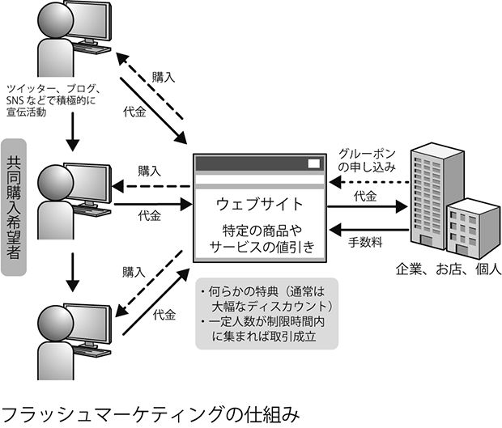
このビジネスモデルを成立させる上で欠かせない存在なのがリアルタイムウェブだ。
共同購入に参加したユーザーたちは、取引を成立させるため、自ら積極的に宣伝活動を行おうとする。しかし制限時間が短いため、通常のブログやＳＮＳで情報発信していては間に合わない。
逆に制限時間が過ぎた後では、「ストック」された情報は何の役にも立たないため、リアルタイムでフローな情報発信が求められるのだ。そこで登場するのが、ツイッターをはじめとしたリアルタイム系サービスというわけである。
購入希望者は制限時間内に参加者を集めるため、自ら盛んにツイッターで宣伝し、それを目にしたフォロワーの中から取引に参加する者が出てくる。さらに参加しないまでも、「これ良さそうですね」などといったメッセージを投稿する者や、オリジナルの発言をリツイートする者なども出てくるため、「お買い得である」という話が次々に伝えられていくわけだ。
こうして伝言ゲーム式に、しかもごく短時間のうちに情報が拡散し、取引成立に必要な参加者が集められることとなる。
例えば実際に起きた例として、「グループモール（GroupMall）」というサイトが東京・代官山にあるパンケーキ屋の商品を半額（通常９４５円が４７５円）の条件で参加者を募集したところ、最初の１００件が１時間で完売し、追加の２００件分も終了時間を待たずに即完売になったそうである（※９）。
もちろん売り出されるモノや特典の内容によっても売れ行きは左右されるだろうが、条件さえそろえば、ウェブを通じてこれ程のスピードを出すことが可能なのが「フラッシュマーケティング」なのだ。
そしてその条件の一つが、リアルタイムウェブの活用と言えるだろう。もともとフラッシュマーケティングが注目される以前から、ツイッターなどでタイムセールを行う企業が存在していた。
例えばツイッターの企業活用における先進的な事例として、デルの活動が取り上げられることが多いが、彼らはタイムセール用のアカウントを設置し、リアルタイムなお買い得情報を積極的に配信することを行っていた。
その成功もあり、デルは２００７年から２００９年にかけての３年足らずで、ツイッターを通じたプロモーションによって６５０万ドル以上の売上を達成したと発表している。リアルタイムウェブによって、「今から１時間だけ半額！」というセールをウェブ上で展開しても、満足な結果が伴うことを期待できる環境になっているのである（※10）。
リアルタイムウェブで社会を変える
リアルタイムウェブと現実の世界が重なり合うようになったことで、ウェブを通じて、大勢の人々の行動をシンクロさせることが可能になった。その局地的な例が「フラッシュマーケティング」なわけだが、もし社会全体にその力を行使できるようになったらどうなるだろうか。
多くの人手が必要なボランティア活動に人々を動員したり、あるいは何かに抗議するためにデモ行進を組織したりするなど、さまざまな社会運動に活用されることだろう。そして実際に、社会を変えるためにリアルタイムウェブが活用されるというケースが起き始めている。
ＢＢＣやレゴといった著名企業をクライアントに持つコンサルタントで、ニューヨーク大学でも教鞭を執るクレイ・シャーキーは、著書の中で２００７年にエジプトで起きた民主主義活動家に対する弾圧事件を取り上げている。
アブドゥル・モネム・マフムード（Abdel Monem Mahmoud）やアラ・アブド・エル・ファタ（Alaa Abd El Fattah）などのエジプト人ブロガーたちは、自らが逮捕されたこと、あるいは仲間が逮捕されたことなどを逐一ツイッター上で報告することで、民主化活動に対する弾圧を少しでも回避しようとしていた。
アブド・エル・ファタとマフムードは政治的な見解が同じだったわけではない。マフムードが保守的なムスリム同胞団のメンバーであったのに対し、ファタは世捨て人のようなブロガーだったが、双方とも言論の自由には深い関心を抱いていた。彼らが使ったのは、一般市民が目撃した物をテレビのニュースチャンネルを介さずに、また遅れや検閲などもなしに世間にレポートすることのできるツールだった。ツイッターはまた、彼らの当局に対する対応を統合する能力を提供した。エル・ファタはツイッターについてこう述べている。「我々はツイッターによって緊密なネットワークを保ち、抗議運動に対する取り締まりについての情報を交換していた。活動家たちはそうした動きへの対応を連携させる手段にもツイッターを使った。」民主化運動家への監視は非常に厳しかったが、ツイッターはリアルタイムの情報と集団連携の２つの能力を彼らに与え、有利な情勢をもたらした。ツイッターが効果を発揮した初期の出来事として、活動家のマレクが警官に捕まったとき、エル・ファタと彼の仲間の一団が協力して彼らの車を取り囲み、マレクの逮捕を防いだことがある。自分たちのコミュニケーションが警察にモニターされているのを知った彼らは、一計を案じてさらに大勢の仲間が応援に来ることを匂わせたメッセージを送った。警察は援軍を送って彼らを取り囲んだため、逆に車は動けなくなってしまった。このおかげでマレクは報道機関や国会議員が到着するまでそこに留まることができた。世論の悪評を恐れた警察はマレクを解放した。これもツイッターがなければ起こらなかったことである（※11）。
こうした政治的弾圧の現場では、一瞬の情報の差が人々の運命を左右する。ほんのささいな情報でもリアルタイムに伝えられること、またリアルタイムで伝えようとする人がいることで、大きな権力にも対抗できる力となるのである。同様の価値は、２００９年におけるイランの民主主義活動でも発揮されたことが記憶に新しい。
また最近でも、インド・パキスタン・中国の国境に位置するカシミール地方での独立運動においてリアルタイムウェブが活用されている。
この地方の独立運動は既に数十年前から続けられており、２００８年にも過去最大の抗議活動が行われているものの、インド国内においても主要メディアが取り上げることは少なかった。しかし活動家たちがツイッターなどを通じて情報発信することで、２０１０年に入ってからこの問題への関心が高まっていることが指摘されている（※12）。
またネットの検閲が厳しい中国ですら、リアルタイムウェブによる変化が始まっている。２０１０年10月、中国最南部の広西チワン族自治区北海市で、武装警官数百人による村民追い出しと家屋取り壊しが始まった。これは現地政府が土地の再開発を目的として開始したもので、武装警官を動員し、立ち退きを拒否する住民を物理的に排除しようというわけである。
これに対し、関係者はツイッターおよび中国版ツイッターの「新浪微博」というサービスを使って状況を配信、多くの人々の関心を集めることでメディアにも注意を向けさせ、現地政府が自由に行動できないような状況を作り出そうとしている（※13）。
もちろんこうした特性によって、良い行いだけが行われるとは限らない（そもそも革命も、倒される支配者側からすれば「悪」と言えるだろう）。実際に米国では、少年たちが結成したギャング集団がツイッターなどを通じて情報交換し、敵対するギャングを襲撃するのに役立てるといったケースが発生している。
逆に英国では、警察関係者（特別な分析官ではなく、現場で働く人々）にツイッターやフェイスブックの講習を受けさせ、捜査に役立てるという取り組みまで行われているそうだ。善悪いずれの結果をもたらすにせよ、リアルタイムウェブによって大規模な行動をアレンジすることが可能であり、現実に活用される時代が到来しているのである。
意識のズレが生むリスク
これまでさまざまな利点を紹介してきたが、社会のリアルタイム化が進行する過程においては、一時的な混乱が生じることは避けられないだろう。リアルタイムウェブのあり方について意識が統一されるまでは、意見の対立から大きな論争が起きることも予想される。
例えば最近の日本では、「トゥギャッター（Togetter）」というツイッター関連サービスのあり方をめぐって議論が起きている。
トゥギャッターは、ツイッターに投稿されたツイートを１枚のページにまとめることができるというサービスだ。例えば何名かのユーザーの間でコメントのやり取りが行われた場合、関係するツイートは個々のページに分散してしまっているため、議論の流れを追うのは非常に骨が折れる。
ツイッターには「リスト」という機能があり、指定したユーザーの発言だけが表示される画面を設定することもできるのだが、あくまでも表示はユーザー単位であり、特定のディスカッションに関係する発言だけを表示するというのは不可能だ。
それを改善してくれるのがトゥギャッターである。トゥギャッターでは、手作業でツイートを拾う必要があるものの、議論に関係する発言だけをまとめることができる。ツイートを並べる順番は自由に変更できるため、あえて時系列を無視して、議論の流れを分かりやすくすることも可能だ。
さらにツイートのフォントサイズを調節したり、あるいは表示色を変えたりすることで、重要な発言を強調することもできる。また一度トゥギャッターに転載してしまえば、何らかの理由でオリジナルのツイートが削除されたとしても、トゥギャッターのページ上では保存される。
一見して分かるように、このサービスは「フロー」だったツイートを、「ストック」として処理することを可能にするサービスである。これにより、本来であれば流れ去ってしまうはずだった情報の断片を拾い上げ、それが全体として形成していたコンテンツを、誰もが分かりやすい形で再構成することができる。
実際にトゥギャッターは発表されてすぐに注目を集め、数多くの貴重な議論を発掘・保存することに役立てられている。
しかしその一方で、発言者が「フロー」だという認識で発言したコメントがずっと残ってしまうという問題や、恣意的な編集が行われて、発言者が想定していなかった文脈にツイートが置かれてしまうという問題が起きている。
例えば同じ「バカ」という発言であっても、その前後に相手をフォローするような発言があった場合と、それだけを抜き出して置かれた場合では、受ける印象や意味まで変わってきてしまうわけだ（さらに「バカ」が大きな赤字で表示されていたとしたらどうだろうか）。
もちろん「ネットは公共の場であり、責任は発言者の側にある」という考え方も一定の真実だろう。ただしツイッターの場合、公式サイトや一般的な専用クライアントでは過去の発言を追うのが困難であり、見かけ上はまさしく「フロー」になっているという点に注意が必要だ。
また自分の見るタイムラインには、自分がフォローしているユーザーしか表示されないため、まるでＩＭやチャットのように、限られた人々との間で行われるプライベートな会話のような印象を与えてしまっている。そもそも「ストック」を前提でブログに意見を書き込むこととは、状況がまったく異なるのである。
トゥギャッターに関する議論は、フロー型とストック型、２つのコミュニケーションをめぐる認識の衝突だと言えるだろう。どちらの立場に立つかによって、導き出される結論は大きく異なる。しばらくは議論が続き、また同様の問題がツイッター以外のリアルタイム系サービスでも生じてくるのではないだろうか。
「日本発リアルタイム文化」の可能性
こうしたリアルタイム化が進む世界の中で、日本はどのような位置に立つことができるのだろうか。
個人的な意見だが、リアルタイムウェブを構成する要素から考えてみると、日本がリアルタイム化をいち早く普及させる社会になる可能性は高いと考えている。
前述のように、日本ではインターネットにアクセス可能な携帯電話が世界に先駆けて普及し、こうした携帯電話を日常生活でフル活用する文化も根付いている。
残念ながらツイッターやユーストリームなど、メジャーなリアルタイム系ウェブサービスは海外発のものがほとんどだが、その利用率は急速に高まっている。トゥギャッターのような議論が起きるのも、逆に日本におけるリアルタイムウェブ活用の先進性を示すものと考えられるだろう。
また日本国内の企業を見ても、リアルタイムウェブの活用に興味を示すケースが少なくない。ユーストリームに出資し、孫社長自らツイッターで消費者とコミュニケーションしているソフトバンクなどはその好例と言えるだろう。「リアルタイム社会」が本格的に日本に定着する条件は、既に整っているのだ。
であるとするなら、日本がリアルタイムウェブ活用における先駆者となり、そのあり方について世界に提言できるのではないだろうか。実際に日本の携帯電話、および携帯電話上のウェブサービスの使われ方については、注目されていないだけでユニークなものがこれまでも多々存在していることは既に解説した通りだ。
そういった面に積極的に目を向け、また世界に発信することにより、日本が来たるべきリアルタイム社会の文化をリードするという可能性は、決して低くないと信じている。
※１ 「２００１年のインターネットにタイムスリップ
Ｇｏｏｇｌｅ検索でＧｏ！」（ITmedia News）
http://www.itmedia.co.jp/news/articles/0810/02/news030.html
※２ http://www.ccs.neu.edu/home/amislove/twittermood/
※３ 「Ｔｗｉｔｔｅｒ秘密文書公開---「『地球の鼓動を伝える
プラットフォームを目指す』」（TechCrunch Japan）
http://jp.techcrunch.com/archives/20090716twitters-internal
-strategy-laid-bare-to-be-the-pulse-of-the-planet/
※４ 先物市場の仕組みを通じて群衆の意見をまとめ、集合知によって
将来予測を行うという発想。ＨＳＸは予測市場サービスの代表例で、
毎年アカデミー賞各賞の予想を行っているが、的中率は８割を超えている。
※５ Sitaram Asur, Bernardo A. Huberman, 'Predicting the Future with Social Media,
' http://arxiv.org/abs/1003.5699
※６ 「Ｔｗｉｔｔｅｒで株式市場を予測：『86・７％の精度』」（Wired Vision）
http://wiredvision.jp/news/201010/2010102223.html
※７ 'The Real-Time Web and its Future,' ReadWriteWeb, p.13-14. （筆者訳）
※８ 'The Real-Time Web and its Future,' ReadWriteWeb, p.74. （筆者訳）
※９ 「Ｔｗｉｔｔｅｒの威力発揮『グルーポン系サービス』広がる」（マネージン）
http://moneyzine.jp/article/detail/188064/
※10 Dell Rings Up $6.5 Million in Sales Using Twitter,' Bloomberg,
http://www.bloomberg.com/apps/news?pid=newsarchive&sid=akXzD_6YNHCk
※11 クレイ・シャーキー著、岩下慶一訳『みんな集まれ！』
（筑摩書房、２０１０年）１８５～１８６ページ
※12 Leo Mirani, 'Sorry, Malcolm Gladwell,
the revolution may well be tweeted,' Guardian.co.uk,
http://www.guardian.co.uk/commentisfree/cifamerica/2010/
oct/02/malcolm-gladwell-social-networking-kashmir
※13 「『武装警官が突入してきた』土地強制収用の生々しいツイッター中継＝蹂躙
された人々の悲痛な叫び―広西チワン族自治区北海市」（Kinbricks Now）
http://kinbricksnow.com/archives/51487794.html
エピローグ
ここまでの解説を読んで、確かに世界が「リアルタイム化」しつつあることが分かった。しかしそれは、まだごく一部の先進国や、ＩＴ業界など狭い世界での話ではないのか---そのような感想を持たれている方のために、アフリカのケニアで起きた事例を紹介しておこう。
話は２００７年12月にさかのぼる。この年、ケニアでは大統領選挙が行われたのだが、それは同国に大きな混乱をもたらすものとなってしまった。
ケニア選挙管理委員会はこの選挙において、当時現職の大統領だったムワイ・キバキの当選を発表。しかし野党候補だったライラ・オディンガは、「選挙には不正があった」として糾弾した。
それをきっかけとして、大規模な部族衝突が発生し、多数の死傷者が出る事態となったのである。混乱に直面したケニア政府は報道管制を敷き、自らの不利になるような情報を封じ込める動きに出た。
これに対し、ケニアの著名ブロガーであったオリー・オコーラの動きによって誕生したのが「ウシャヒディ（Ushahidi）」（スワヒリ語で「目撃者」もしくは「証言」の意味）というウェブサイトである。
これはケニア市民に政府の不正行為について報告してもらおうというもので、サイト上で（後に携帯電話からのテキストメッセージにも対応）情報を入力することができ、さらに寄せられた情報を自答的に、ほぼリアルタイムで集約し、地図上にプロットするという内容だった。
このサイトが登場したことで、不正に関する情報が多くの市民から寄せられることとなり、実際にウシャヒディに集約された情報に基づいて、ＮＧＯ団体が行動を取るという流れが生まれた。
そして３年後の２０１０年８月。同じくケニアで新憲法に関する国民投票が行われたのだが、こちらは大きな混乱もなく終了している。それには政治情勢が変化したという点も大きいのだが、２００７年におけるウシャヒディと同様に、ウェブを通じて市民の力を結集しようという動きが存在していた。
２０１０年の国民投票をサポートしたのは、「ケニア・ディサイド（Kenya Decides）」というウェブサイトである。さらにツイッターやフェイスブックといったリアルタイム系サービスも活用され、特にツイッター上では「#KenyaDecides」というハッシュタグが登場し、活発な情報交換がなされることとなった。
使われるウェブサイトに変化はあったものの、携帯電話というインフラ、そして市民の間に情報を持ち寄るという姿勢があったことにより、ケニアの市民運動にリアルタイムウェブが大きく貢献することになったのである。
ちなみにウシャヒディはその後オープンソース化され、コンゴやハイチといった国々でも役立てられることとなった。またツイッターやフェイスブックを政治活動に役立てるという発想については、イランの反大統領運動でも具体化されたことが記憶に新しい。
これらの例が示しているように、世界のあらゆる国々において、そしてあらゆる場面において、リアルタイムウェブ（本書で述べてきたように、特定のウェブサービスを指すような狭い意味ではなく、社会全体を含めた広い意味で）による変化が生まれつつあるのだ。決して一部の先進国や、ごく狭い分野の中でだけで起きている変化なのではない。
最後になるが、ごく個人的な体験で本書を締めくくることをお許しいただきたい。
アイスランドのエイヤフィヤトラヨークトル氷河。思わず舌を噛んでしまいそうな名前だが、２０１０年に最も有名になった氷河と言って間違いないだろう。
この年の３月から５月にかけて噴火したエイヤフィヤトラヨークトル氷河によって、ヨーロッパの空は大混乱に陥った。噴火によって巻き上げられた火山灰により、ジェット旅客機のエンジンにダメージが与えられる危険性が発生。最悪の場合は墜落する恐れもあったため、欧州諸国の主要空港が長期間閉鎖されたのである。
４月に起きた噴火の際には、発生から６日間で９万５０００便以上ものフライトが欠航となっている 。その結果、無数の旅行客が足止めを余儀なくされ、空港に何日も寝泊まりする人々が溢れるという事態となった。
そんなとき、旅行客の力強い味方となったのがリアルタイムウェブであった。
例えば、本書で何度となく事例として取り上げたツイッター。欧州各地で立ち往生せざるを得なくなった人々は、それぞれが手に持つモバイル端末からツイッターにアクセスし、噴火の状況はどうか、空港はいつ再開されるのか、目的地までの迂回路はないのかといった重要な情報を交換し合ったのである。
この騒動が起きてすぐに、ツイッター上には「#getmehome」というハッシュタグが生まれている。このタグは「私を家に連れて帰って（Get Me Home）」というフレーズをつなげたもので、文字通り足止めを喰らっている旅行者たちにより、協力して家に帰る目的で使われ始めたものだった。
#getmehomeを介して交わされたメッセージの例を挙げてみよう。
「モロッコからイギリスに戻らなくちゃいけないんだ。僕と同じように、陸か海から帰ろうと計画している人はいる？」
「ベルリンで立ち往生してるんだけど、来週クルマでイギリスまで行こうとしてる人はいないかしら？」
「ニースからバルセロナまで、タクシーで一緒に行く人募集」
などといった具合だ。
このように「誰がどこまで行く、行きたがっている」という情報がリアルタイムで交換された。そしてリアルタイムでの情報交換なだけに、たまたま近くにいた者同士でクルマをシェアするなど、具体的な行動に結びつく場合も多かったのである。
この他にも「#stranded」（「立ち往生している」の意味）や「#ashtag」（直訳すれば「火山灰のタグ」という意味だが、「ハッシュタグ」との語呂合わせになっている）などといったものが生まれ、旅行者たちはそれぞれの目的に応じたタグを駆使しながら、同じ境遇に置かれた人々とコミュニケーションを行った。
さらに、こちらも事例として度々取り上げたフェイスブックの上でも、関連コミュニティが即座に立ち上げられ、活発な情報交換が行われた。
こうしたウェブサービスを駆使して情報収集する旅行者の様子は、ニュース専門チャンネルのＣＮＮが「立ち往生した旅行者たちは、（公的機関の援助を待たずに）自ら行動して助け合っている」と評したほどだった。
そして私自身が、同じ状況下でツイッターの恩恵にあずかった旅行者の一人だった。家族旅行で４月上旬にスペインを訪れていた最中に、このトラブルに巻き込まれてしまい、マドリッドで１週間も足止めされることになったのである。
立ち往生している間はのんびり過ごすわけにもいかず、情報収集に奔走する日々となったのだが、テレビや電話といった従来の情報伝達手段以上に活躍してくれたのがツイッターだ。
何しろ同じようにマドリッドで足止めされている日本人を捜し始めて数時間のうちに、何人かの人々とコンタクトを取ることができたほどである。もちろんテレビやニュースサイトなどから情報を拾うことも多かったのだが、「こんなニュースが流れているよ」「近くにこんな人がいるよ」といった情報をいち早く伝えてくれたのがツイッターだった。
さすがに陸路での脱出ルートを探すというのは無理な話だったので、「#getmehome」はそれほど使わなかったものの、「#ashtag」とＫＬＭオランダ航空（私が予約していた航空会社）の公式ツイッターアカウントは、日本から持っていったｉＰｈｏｎｅで頻繁にチェックすることとなった。もしツイッターがなかったら、またはｉＰｈｏｎｅがなかったらと思うと今でも冷や汗が出る。
このアイスランドの火山爆発という予想外のトラブルに見舞われたおかげで、私は思いがけずリアルタイムウェブのパワーを実体験することとなった。
「リアルタイムウェブ」という概念が登場してきたことは耳にしていたものの、恐らくスペインでの体験がなければ、その重要性を正しく理解することはできなかっただろう。そして今回、このような形でリアルタイムウェブの本を書こうという心境にもならなかったかもしれない。
リアルタイムウェブを「新しいバズワードの一つにすぎない」と捉えている方も多いだろう。本書を読んで、それは過小評価であり、リアルタイムウェブが大きな変化をもたらす可能性があると感じていただければ幸いだ。しかし本書がそれに失敗していたとしても、私のように、いつか意外な形でリアルタイムウェブの力を目の当たりにすることになるだろうと信じている。
本書執筆に当たり、マイナビの田島氏とは繰り返し議論させていただいた。正直なところ、本書の執筆に取りかかった時点では、「リアルタイムウェブとはこういうものだ」という明確な捉え方ができていたわけではない。
その状態から一冊の本を書き上げられた背景には、田島氏との議論を通じて、私自身の考えが整理できたことが大きい。この場を借りて御礼を申し上げたい。
また今回の執筆でも、家族には大きな迷惑をかけてしまった。文章が頭に浮かばず、イライラした表情を浮かべているとき、暖かく接してくれた妻と娘には心から感謝の言葉を贈りたい。
この言葉はリアルタイムには伝わらないが、ストックしていつまでも残すことができるというのは、従来のメディアが守っている大きな価値の一つと言えるだろう。
２０１０年11月 小林啓倫
●著者プロフィール
小林啓倫（こばやし・あきひと）
ＩＴジャーナリスト。１９７３年東京都生まれ、筑波大学大学院卒。国内ＳＩ企業、外資系コンサルティング会社、米国でのＭＢＡ留学などを経て、２００５年より国内コンサルティングファームに勤務。また「Polar Bear Blog（http://akihitok.typepad.jp/）」および「シロクマ日報（http://blogs.itmedia.co.jp/akihito/）」の２つのブログを運営するブロガーでもある。著書に『ＡＲ―拡張現実』（マイナビ）ほか多数。ツイッターＩＤは「akihito」。
リアルタイムウェブ「なう」の時代
２０１３年４月１日 電子書籍版発行
著 者 小林啓倫
発行者 中川信行
発行所 株式会社マイナビ
〒１００－０００３ 東京都千代田区一ツ橋１－１－１ パレスサイドビル
電話 ０３（６２６７）４４４４（編集部） 電子メール pc-books@mynavi.jp（質問用）
ＵＲＬ http://book.mynavi.jp
●本書は、著作権上の保護を受けています。本書の一部あるいは全部を著者、発行者の承認を受けずに無断で複写、複製することは禁じられています。
●内容への電話によるお問い合わせには一切応じられません。ご質問等がございましたら右記質問用のメールアドレスにご送信ください。
●本書によって生じたいかなる損害についても、著者ならびに株式会社マイナビは責任を負いません。
ⓒ２０１０／２０１３ＡＫＩＨＩＴＯ ＫＯＢＡＹＡＳＨＩ